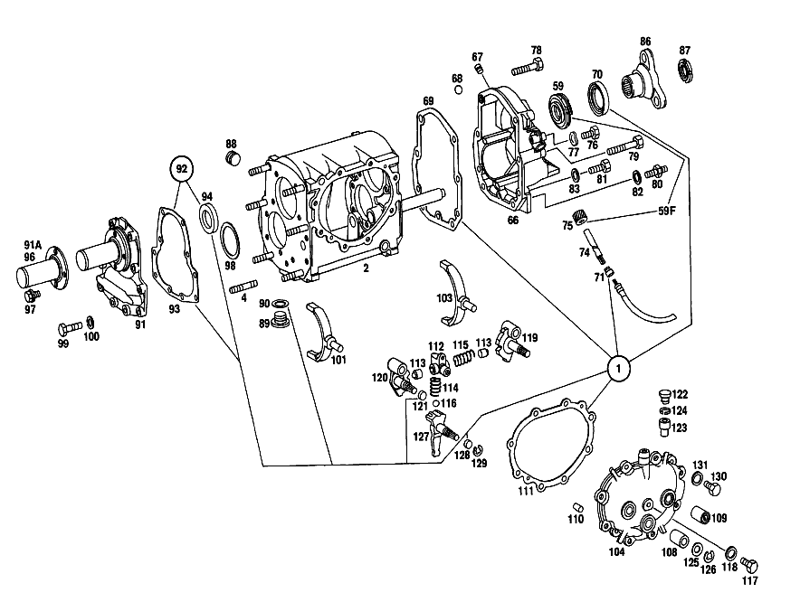

| № | Артикул | Название | Кол. | Примечание | Ограничение |
|---|---|---|---|---|---|
| 1 | A 115 586 02 26 | РЕМКОМПЛЕКТ | - | Коробка передач | |
| 1 | A 115 260 01 68 | набор уплотнений | 1 | Коробка передач [018] UP TO CHASSIS: 000,002,010 111709 015 143890 100,102,103,110,112 295608 115 151032 FROM CHASSIS SEE UNIT MICROFISCHE,359 | |
| 2 | A 115 260 10 11 | КОРПУС КП | 1 | Рулевое управление: ВправоКоробка передач [018] UP TO CHASSIS: 000,002,010 111709 015 143890 100,102,103,110,112 295608 115 151032 FROM CHASSIS SEE UNIT MICROFISCHE,359 | |
| 4 | N 000939 010012 | - Винт | 6 | [018] UP TO CHASSIS: 000,002,010 111709 015 143890 100,102,103,110,112 295608 115 151032 FROM CHASSIS SEE UNIT MICROFISCHE,359 | |
| 5 | A 115 263 13 30 | - Ось шестерни заднего хода | 1 | Коробка передач [018] UP TO CHASSIS: 000,002,010 111709 015 143890 100,102,103,110,112 295608 115 151032 FROM CHASSIS SEE UNIT MICROFISCHE,359 | |
| 6 | A 115 263 10 02 | ПРОМЕЖУТОЧНЫЙ ВАЛ | 1 | Коробка передач [402] БОЛЬШЕ НЕ ПОСТАВЛЯЕТСЯ [020] UP TO CHASSIS: 000,002,010 098305 015 121865 100,102,103,110,112 255528 115 128218 | |
| 7 | A 115 991 06 68 | УСТАНОВОЧНАЯ ПРУЖИНА | 1 | Коробка передач [402] БОЛЬШЕ НЕ ПОСТАВЛЯЕТСЯ [018] UP TO CHASSIS: 000,002,010 111709 015 143890 100,102,103,110,112 295608 115 151032 FROM CHASSIS SEE UNIT MICROFISCHE,359 | |
| 8 | A 115 263 04 13 | ШЕСТЕРНЯ | - | Коробка передач | |
| 8F | A 115 260 05 08 | Блок шестерен | 1 | (GEAR SET),3RD SPEED Коробка передач [018] UP TO CHASSIS: 000,002,010 111709 015 143890 100,102,103,110,112 295608 115 151032 FROM CHASSIS SEE UNIT MICROFISCHE,359 | |
| 9 | A 115 263 13 10 | ШЕСТЕРНЯ | - | Коробка передач | |
| 10 | A 115 263 03 52 | РАСПОРНАЯ ШАЙБА | - | Коробка передач | |
| 10 | A 115 263 07 52 | Дистанционная шайба | 1 | Коробка передач [018] UP TO CHASSIS: 000,002,010 111709 015 143890 100,102,103,110,112 295608 115 151032 FROM CHASSIS SEE UNIT MICROFISCHE,359 | |
| 11 | A 001 981 71 25 | ШАРИКОПОДШИПНИК | - | Коробка передач | |
| 11 | A 004 981 42 01 | Подшипник с цил. роликами | 1 | Коробка передач [018] UP TO CHASSIS: 000,002,010 111709 015 143890 100,102,103,110,112 295608 115 151032 FROM CHASSIS SEE UNIT MICROFISCHE,359 | |
| 12 | A 115 990 08 51 | гайка | 1 | Коробка передач [018] UP TO CHASSIS: 000,002,010 111709 015 143890 100,102,103,110,112 295608 115 151032 FROM CHASSIS SEE UNIT MICROFISCHE,359 | |
| 13 | A 115 260 27 20 | ПРИВОДНОЙ ВАЛ | - | Коробка передач [018] UP TO CHASSIS: 000,002,010 111709 015 143890 100,102,103,110,112 295608 115 151032 FROM CHASSIS SEE UNIT MICROFISCHE,359 | |
| 14 | A 186 262 00 66 | Маслозащитное кольцо | 1 | Коробка передач [018] UP TO CHASSIS: 000,002,010 111709 015 143890 100,102,103,110,112 295608 115 151032 FROM CHASSIS SEE UNIT MICROFISCHE,359 | |
| 15 | A 000 981 99 25 | ШАРИКОПОДШИПНИК | - | Коробка передач | |
| 15 | A 002 981 06 25 | ШАРИКОПОДШИПНИК | 1 | Коробка передач [018] UP TO CHASSIS: 000,002,010 111709 015 143890 100,102,103,110,112 295608 115 151032 FROM CHASSIS SEE UNIT MICROFISCHE,359 | |
| 15 | A 002 981 07 25 | Рад. шарикоподшипник | 1 | Коробка передач [018] UP TO CHASSIS: 000,002,010 111709 015 143890 100,102,103,110,112 295608 115 151032 FROM CHASSIS SEE UNIT MICROFISCHE,359 | |
| 17 | A 136 262 00 94 | Пруж. стопорное кольцо | - | Коробка передач | |
| 17 | A 123 262 04 94 | Пруж. стопорное кольцо | 1 | Коробка передач [018] UP TO CHASSIS: 000,002,010 111709 015 143890 100,102,103,110,112 295608 115 151032 FROM CHASSIS SEE UNIT MICROFISCHE,359 | |
| 18 | A 186 262 04 51 | Проставочное кольцо | 1 | Коробка передач [018] UP TO CHASSIS: 000,002,010 111709 015 143890 100,102,103,110,112 295608 115 151032 FROM CHASSIS SEE UNIT MICROFISCHE,359 | |
| 19 | A 136 994 06 35 | Пруж. стопорное кольцо | 1 | ПО НЕОБХОДИМОСТИ 1.9 MM Коробка передач [018] UP TO CHASSIS: 000,002,010 111709 015 143890 100,102,103,110,112 295608 115 151032 FROM CHASSIS SEE UNIT MICROFISCHE,359 | |
| 20 | A 136 262 06 52 | Компенсационная шайба | NB | ПО НЕОБХОДИМОСТИ 0.1 MM Коробка передач [018] UP TO CHASSIS: 000,002,010 111709 015 143890 100,102,103,110,112 295608 115 151032 FROM CHASSIS SEE UNIT MICROFISCHE,359 | |
| 21 | A 115 262 15 05 | Вторичный вал | 1 | Коробка передач [018] UP TO CHASSIS: 000,002,010 111709 015 143890 100,102,103,110,112 295608 115 151032 FROM CHASSIS SEE UNIT MICROFISCHE,359 [004] FROM CHASSIS: 000,002,010 039285 015 038200 100,102,103,110,112 090464 115 041378 | |
| 22 | A 115 260 32 44 | ШЕСТЕРНЯ | - | Коробка передач | |
| 22 | A 115 260 05 08 | Блок шестерен | 1 | (GEAR SET),3RD SPEED Коробка передач [018] UP TO CHASSIS: 000,002,010 111709 015 143890 100,102,103,110,112 295608 115 151032 FROM CHASSIS SEE UNIT MICROFISCHE,359 | |
| 23 | A 005 981 55 10 | Игольчатый подшипник | 1 | Коробка передач [018] UP TO CHASSIS: 000,002,010 111709 015 143890 100,102,103,110,112 295608 115 151032 FROM CHASSIS SEE UNIT MICROFISCHE,359 [058] OPTIONAL WITH 003 981 03 10,003 981 08 10,003 981 09 10 | |
| 24 | A 115 262 16 34 | Кольцо синхронизатора | 2 | ТРЕТЬЯ И ЧЕТВЁРТАЯ ПЕРЕДАЧА Коробка передач [018] UP TO CHASSIS: 000,002,010 111709 015 143890 100,102,103,110,112 295608 115 151032 FROM CHASSIS SEE UNIT MICROFISCHE,359 | |
| 25 | A 120 262 23 62 | Упорная шайба | 1 | Коробка передач [018] UP TO CHASSIS: 000,002,010 111709 015 143890 100,102,103,110,112 295608 115 151032 FROM CHASSIS SEE UNIT MICROFISCHE,359 | |
| 26 | A 115 260 18 45 | СИНХРОНИЗАТОР | - | [018] UP TO CHASSIS: 000,002,010 111709 015 143890 100,102,103,110,112 295608 115 151032 FROM CHASSIS SEE UNIT MICROFISCHE,359 | |
| 27 | A 115 262 12 35 | - СИНХРОНИЗАТОР | - | ТРЕТЬЯ И ЧЕТВЁРТАЯ ПЕРЕДАЧА Коробка передач [018] UP TO CHASSIS: 000,002,010 111709 015 143890 100,102,103,110,112 295608 115 151032 FROM CHASSIS SEE UNIT MICROFISCHE,359 [402] БОЛЬШЕ НЕ ПОСТАВЛЯЕТСЯ | |
| 28 | A 180 993 41 01 | - пружина | 3 | Коробка передач [018] UP TO CHASSIS: 000,002,010 111709 015 143890 100,102,103,110,112 295608 115 151032 FROM CHASSIS SEE UNIT MICROFISCHE,359 | |
| 29 | N 005401 306500 | - Шар | 3 | 6.5mm Коробка передач [018] UP TO CHASSIS: 000,002,010 111709 015 143890 100,102,103,110,112 295608 115 151032 FROM CHASSIS SEE UNIT MICROFISCHE,359 | |
| 30 | A 115 262 01 40 | - Поводок | 3 | Коробка передач [018] UP TO CHASSIS: 000,002,010 111709 015 143890 100,102,103,110,112 295608 115 151032 FROM CHASSIS SEE UNIT MICROFISCHE,359 | |
| 31 | A 115 262 18 23 | - Скользящая муфта | - | Коробка передач [018] UP TO CHASSIS: 000,002,010 111709 015 143890 100,102,103,110,112 295608 115 151032 FROM CHASSIS SEE UNIT MICROFISCHE,359 [402] БОЛЬШЕ НЕ ПОСТАВЛЯЕТСЯ | |
| 32 | A 004 981 04 10 | ПОДШИПНИК ИГОЛЬЧАТЫЙ | - | Коробка передач | |
| 32 | A 005 981 54 10 | Игольчатый подшипник | 1 | Коробка передач [018] UP TO CHASSIS: 000,002,010 111709 015 143890 100,102,103,110,112 295608 115 151032 FROM CHASSIS SEE UNIT MICROFISCHE,359 | |
| 33 | A 115 990 10 51 | гайка | 1 | Коробка передач [018] UP TO CHASSIS: 000,002,010 111709 015 143890 100,102,103,110,112 295608 115 151032 FROM CHASSIS SEE UNIT MICROFISCHE,359 | |
| 34 | A 005 981 56 10 | Игольчатый подшипник | 1 | Коробка передач [018] UP TO CHASSIS: 000,002,010 111709 015 143890 100,102,103,110,112 295608 115 151032 FROM CHASSIS SEE UNIT MICROFISCHE,359 | |
| 35 | A 115 260 31 44 | ШЕСТЕРНЯ | 1 | Коробка передач [402] БОЛЬШЕ НЕ ПОСТАВЛЯЕТСЯ [018] UP TO CHASSIS: 000,002,010 111709 015 143890 100,102,103,110,112 295608 115 151032 FROM CHASSIS SEE UNIT MICROFISCHE,359 | |
| 36 | A 115 262 15 34 | КОЛЬЦО СИНХРОНИЗАТОРА | 2 | ПЕРВАЯ И ВТОРАЯ ПЕРЕДАЧА Коробка передач [018] UP TO CHASSIS: 000,002,010 111709 015 143890 100,102,103,110,112 295608 115 151032 FROM CHASSIS SEE UNIT MICROFISCHE,359 | |
| 37 | A 115 262 09 62 | ШАЙБА УПОРНАЯ | 1 | 4.0 MM THICK Коробка передач [402] БОЛЬШЕ НЕ ПОСТАВЛЯЕТСЯ [018] UP TO CHASSIS: 000,002,010 111709 015 143890 100,102,103,110,112 295608 115 151032 FROM CHASSIS SEE UNIT MICROFISCHE,359 | |
| 38 | A 115 260 21 45 | СИНХРОНИЗАТОР | - | Коробка передач [018] UP TO CHASSIS: 000,002,010 111709 015 143890 100,102,103,110,112 295608 115 151032 FROM CHASSIS SEE UNIT MICROFISCHE,359 | |
| 39 | A 115 262 13 35 | - СИНХРОНИЗАТОР | - | Коробка передач [018] UP TO CHASSIS: 000,002,010 111709 015 143890 100,102,103,110,112 295608 115 151032 FROM CHASSIS SEE UNIT MICROFISCHE,359 [402] БОЛЬШЕ НЕ ПОСТАВЛЯЕТСЯ | |
| 40 | A 180 993 41 01 | - пружина | 3 | Коробка передач [018] UP TO CHASSIS: 000,002,010 111709 015 143890 100,102,103,110,112 295608 115 151032 FROM CHASSIS SEE UNIT MICROFISCHE,359 | |
| 41 | N 005401 306500 | - Шар | 3 | 6.5mm Коробка передач [018] UP TO CHASSIS: 000,002,010 111709 015 143890 100,102,103,110,112 295608 115 151032 FROM CHASSIS SEE UNIT MICROFISCHE,359 | |
| 42 | A 115 262 02 40 | - ПОВОДОК | 3 | Коробка передач [402] БОЛЬШЕ НЕ ПОСТАВЛЯЕТСЯ [018] UP TO CHASSIS: 000,002,010 111709 015 143890 100,102,103,110,112 295608 115 151032 FROM CHASSIS SEE UNIT MICROFISCHE,359 | |
| 43 | A 115 262 14 23 | - СКОЛЬЗ. МУФТА СИНХРОНИЗ. | - | Коробка передач [018] UP TO CHASSIS: 000,002,010 111709 015 143890 100,102,103,110,112 295608 115 151032 FROM CHASSIS SEE UNIT MICROFISCHE,359 [402] БОЛЬШЕ НЕ ПОСТАВЛЯЕТСЯ | |
| 45 | A 115 262 07 11 | ШЕСТЕРНЯ | 1 | ПЕРВАЯ ПЕРЕДАЧА Коробка передач [020] UP TO CHASSIS: 000,002,010 098305 015 121865 100,102,103,110,112 255528 115 128218 | |
| 46 | A 115 262 25 62 | ШАЙБА УПОРНАЯ | 1 | ПО НЕОБХОДИМОСТИ 3.8 MM Коробка передач [402] БОЛЬШЕ НЕ ПОСТАВЛЯЕТСЯ [018] UP TO CHASSIS: 000,002,010 111709 015 143890 100,102,103,110,112 295608 115 151032 FROM CHASSIS SEE UNIT MICROFISCHE,359 [002] FROM TRANSMISSION: 000,002,010,015 005986 100,102,103,110,112,115 000037 | |
| 47 | A 115 262 02 51 | Проставочное кольцо | 1 | Коробка передач [402] БОЛЬШЕ НЕ ПОСТАВЛЯЕТСЯ [018] UP TO CHASSIS: 000,002,010 111709 015 143890 100,102,103,110,112 295608 115 151032 FROM CHASSIS SEE UNIT MICROFISCHE,359 | |
| 48 | A 005 981 56 10 | Игольчатый подшипник | 1 | Коробка передач [018] UP TO CHASSIS: 000,002,010 111709 015 143890 100,102,103,110,112 295608 115 151032 FROM CHASSIS SEE UNIT MICROFISCHE,359 | |
| 49 | A 002 981 06 25 | ШАРИКОПОДШИПНИК | 1 | Коробка передач [018] UP TO CHASSIS: 000,002,010 111709 015 143890 100,102,103,110,112 295608 115 151032 FROM CHASSIS SEE UNIT MICROFISCHE,359 | |
| 50 | A 115 263 09 32 | ШЕСТЕРНЯ ОБРАТНОГО ХОДА | 1 | ПРОМЕЖУТОЧНЫЙ ВАЛ Коробка передач [020] UP TO CHASSIS: 000,002,010 098305 015 121865 100,102,103,110,112 255528 115 128218 | |
| 51 | A 136 994 06 35 | Пруж. стопорное кольцо | 1 | ПО НЕОБХОДИМОСТИ 1.9 MM Коробка передач [018] UP TO CHASSIS: 000,002,010 111709 015 143890 100,102,103,110,112 295608 115 151032 FROM CHASSIS SEE UNIT MICROFISCHE,359 | |
| 52 | A 136 262 06 52 | Компенсационная шайба | NB | ПО НЕОБХОДИМОСТИ 0.1 MM Коробка передач [018] UP TO CHASSIS: 000,002,010 111709 015 143890 100,102,103,110,112 295608 115 151032 FROM CHASSIS SEE UNIT MICROFISCHE,359 | |
| 53 | A 115 262 26 39 | Удерживающее кольцо | 1 | Коробка передач [018] UP TO CHASSIS: 000,002,010 111709 015 143890 100,102,103,110,112 295608 115 151032 FROM CHASSIS SEE UNIT MICROFISCHE,359 | |
| 54 | N 000137 007201 | Пружинная шайба | 4 | Коробка передач [018] UP TO CHASSIS: 000,002,010 111709 015 143890 100,102,103,110,112 295608 115 151032 FROM CHASSIS SEE UNIT MICROFISCHE,359 | |
| 55 | A 115 990 06 01 | болт | 4 | Коробка передач [018] UP TO CHASSIS: 000,002,010 111709 015 143890 100,102,103,110,112 295608 115 151032 FROM CHASSIS SEE UNIT MICROFISCHE,359 | |
| 56 | A 001 981 71 25 | ШАРИКОПОДШИПНИК | - | Коробка передач | |
| 56 | A 004 981 42 01 | Подшипник с цил. роликами | 1 | Коробка передач [018] UP TO CHASSIS: 000,002,010 111709 015 143890 100,102,103,110,112 295608 115 151032 FROM CHASSIS SEE UNIT MICROFISCHE,359 | |
| 57 | A 115 990 09 51 | гайка | 1 | Коробка передач [018] UP TO CHASSIS: 000,002,010 111709 015 143890 100,102,103,110,112 295608 115 151032 FROM CHASSIS SEE UNIT MICROFISCHE,359 | |
| 58 | A 115 262 05 21 | ШЕСТЕРНЯ | - | Коробка передач | |
| 58 | A 117 262 07 21 | Шестерня заднего хода | 1 | ВТОРИЧНЫЙ ВАЛ Коробка передач [018] UP TO CHASSIS: 000,002,010 111709 015 143890 100,102,103,110,112 295608 115 151032 FROM CHASSIS SEE UNIT MICROFISCHE,359 | |
| 59 | A 115 264 04 30 | ПРИВОДНАЯ ШЕСТЕРНЯ | - | Коробка передач | |
| 59F | A 115 260 06 48 | ПРИВОДНАЯ ШЕСТЕРНЯ | 1 | Коробка передач [018] UP TO CHASSIS: 000,002,010 111709 015 143890 100,102,103,110,112 295608 115 151032 FROM CHASSIS SEE UNIT MICROFISCHE,359 | |
| 60 | A 115 260 10 25 | Шестерня заднего хода | 1 | Коробка передач [018] UP TO CHASSIS: 000,002,010 111709 015 143890 100,102,103,110,112 295608 115 151032 FROM CHASSIS SEE UNIT MICROFISCHE,359 | |
| 61 | A 117 263 01 50 | - втулка | 1 | Коробка передач [018] UP TO CHASSIS: 000,002,010 111709 015 143890 100,102,103,110,112 295608 115 151032 FROM CHASSIS SEE UNIT MICROFISCHE,359 | |
| 62 | A 115 260 06 31 | Тяга переключения передач | 1 | ПЕРЕДАЧА ЗАДНЕГО ХОДА Коробка передач [018] UP TO CHASSIS: 000,002,010 111709 015 143890 100,102,103,110,112 295608 115 151032 FROM CHASSIS SEE UNIT MICROFISCHE,359 | |
| 63 | A 115 265 02 19 | Поводок | 1 | Коробка передач [018] UP TO CHASSIS: 000,002,010 111709 015 143890 100,102,103,110,112 295608 115 151032 FROM CHASSIS SEE UNIT MICROFISCHE,359 | |
| 64 | N 001481 006005 | Распорный штифт | 1 | Коробка передач [018] UP TO CHASSIS: 000,002,010 111709 015 143890 100,102,103,110,112 295608 115 151032 FROM CHASSIS SEE UNIT MICROFISCHE,359 | |
| 66 | A 115 260 22 16 | КРЫШКА КОРПУСА | 1 | СЗАДИ Рулевое управление: ВлевоКоробка передач [402] БОЛЬШЕ НЕ ПОСТАВЛЯЕТСЯ [020] UP TO CHASSIS: 000,002,010 098305 015 121865 100,102,103,110,112 255528 115 128218 | |
| 67 | A 153 264 00 55 | - Пробка | 1 | Коробка передач [024] UP TO CHASSIS: 000,002,010 062907 015 069056 100,102,103,110,112 157972 115 075034 | |
| 68 | A 001 981 21 85 | - ШАРИК | - | Коробка передач | |
| 68 | A 001 981 33 85 | - ШАРИК | 1 | Коробка передач [402] БОЛЬШЕ НЕ ПОСТАВЛЯЕТСЯ [018] UP TO CHASSIS: 000,002,010 111709 015 143890 100,102,103,110,112 295608 115 151032 FROM CHASSIS SEE UNIT MICROFISCHE,359 [025] FROM CHASSIS: 000,002,010 062908 015 069057 100,102,103,110,112 157973 115 075035 | |
| 69 | A 115 261 02 79 | Уплотнительная прокладка | 1 | Коробка передач [402] БОЛЬШЕ НЕ ПОСТАВЛЯЕТСЯ | |
| 70 | A 005 997 87 47 | УПЛОТНИТ. КОЛЬЦО | 1 | ВТОРИЧНЫЙ ВАЛ Коробка передач | |
| 71 | A 011 997 64 47 | Сальник | - | Коробка передач | |
| 74 | A 115 264 01 32 | Вал | 1 | ПРИВОД СПИДОМЕТРА Коробка передач [018] UP TO CHASSIS: 000,002,010 111709 015 143890 100,102,103,110,112 295608 115 151032 FROM CHASSIS SEE UNIT MICROFISCHE,359 [402] БОЛЬШЕ НЕ ПОСТАВЛЯЕТСЯ | |
| 75 | A 120 264 02 31 | Ведущее колесо | - | Коробка передач | |
| 75 | A 115 260 06 48 | ПРИВОДНАЯ ШЕСТЕРНЯ | - | СМ. РИС.: 59F Коробка передач | |
| 76 | N 000931 006083 | БОЛТ | 1 | Коробка передач [018] UP TO CHASSIS: 000,002,010 111709 015 143890 100,102,103,110,112 295608 115 151032 FROM CHASSIS SEE UNIT MICROFISCHE,359 | |
| 77 | N 000137 006204 | Пружинная шайба | 1 | Коробка передач [018] UP TO CHASSIS: 000,002,010 111709 015 143890 100,102,103,110,112 295608 115 151032 FROM CHASSIS SEE UNIT MICROFISCHE,359 | |
| 78 | N 000931 010258 | Винт | 2 | Коробка передач [018] UP TO CHASSIS: 000,002,010 111709 015 143890 100,102,103,110,112 295608 115 151032 FROM CHASSIS SEE UNIT MICROFISCHE,359 | |
| 79 | N 000931 010300 | Винт | 2 | Коробка передач [018] UP TO CHASSIS: 000,002,010 111709 015 143890 100,102,103,110,112 295608 115 151032 FROM CHASSIS SEE UNIT MICROFISCHE,359 | |
| 80 | A 115 990 13 10 | БОЛТ | 2 | Коробка передач [402] БОЛЬШЕ НЕ ПОСТАВЛЯЕТСЯ [018] UP TO CHASSIS: 000,002,010 111709 015 143890 100,102,103,110,112 295608 115 151032 FROM CHASSIS SEE UNIT MICROFISCHE,359 | |
| 81 | N 000933 007019 | Винт | 3 | Коробка передач [018] UP TO CHASSIS: 000,002,010 111709 015 143890 100,102,103,110,112 295608 115 151032 FROM CHASSIS SEE UNIT MICROFISCHE,359 | |
| 82 | N 000125 010518 | Шайба | - | Коробка передач | |
| 82 | N 000125 010532 | Шайба | 6 | Коробка передач [018] UP TO CHASSIS: 000,002,010 111709 015 143890 100,102,103,110,112 295608 115 151032 FROM CHASSIS SEE UNIT MICROFISCHE,359 | |
| 83 | N 000125 007408 | Шайба | - | Коробка передач | |
| 83 | N 006902 007100 | Шайба | 3 | Коробка передач [018] UP TO CHASSIS: 000,002,010 111709 015 143890 100,102,103,110,112 295608 115 151032 FROM CHASSIS SEE UNIT MICROFISCHE,359 | |
| 86 | A 115 262 11 45 | Фланец | 1 | Коробка передач [018] UP TO CHASSIS: 000,002,010 111709 015 143890 100,102,103,110,112 295608 115 151032 FROM CHASSIS SEE UNIT MICROFISCHE,359 | |
| 87 | A 115 990 07 60 | гайка | - | Коробка передач | |
| 87 | A 123 990 00 60 | гайка | 1 | Коробка передач [018] UP TO CHASSIS: 000,002,010 111709 015 143890 100,102,103,110,112 295608 115 151032 FROM CHASSIS SEE UNIT MICROFISCHE,359 [004] FROM CHASSIS: 000,002,010 039285 015 038200 100,102,103,110,112 090464 115 041378 | |
| 88 | A 186 997 00 32 | ЗАГЛУШКА РЕЗЬБОВАЯ | 1 | M24X1,5 Коробка передач [018] UP TO CHASSIS: 000,002,010 111709 015 143890 100,102,103,110,112 295608 115 151032 FROM CHASSIS SEE UNIT MICROFISCHE,359 | |
| 89 | A 094 997 24 00 | Резьбовая пробка | - | Коробка передач | |
| 89 | A 210 997 01 32 | Резьбовая пробка | 1 | Коробка передач [018] UP TO CHASSIS: 000,002,010 111709 015 143890 100,102,103,110,112 295608 115 151032 FROM CHASSIS SEE UNIT MICROFISCHE,359 | |
| 90 | N 007603 024105 | Уплотнительное кольцо | 1 | Коробка передач [018] UP TO CHASSIS: 000,002,010 111709 015 143890 100,102,103,110,112 295608 115 151032 FROM CHASSIS SEE UNIT MICROFISCHE,359 | |
| 91 | A 115 260 11 21 | Крышка корпуса | - | Коробка передач | |
| 91 | A 115 261 16 18 | КРЫШКА КОРПУСА | - | Коробка передач | |
| 91 | A 094 261 09 00 | Крышка корпуса | 1 | СПЕРЕДИ Коробка передач [402] БОЛЬШЕ НЕ ПОСТАВЛЯЕТСЯ | |
| 91A | A 115 261 02 43 | - Направляющая трубка | 1 | Коробка передач | |
| 92 | A 115 586 01 26 | ремкомплект | - | Коробка передач | |
| 92 | A 115 260 00 68 | КОМПЛЕКТ УПЛОТНЕНИЙ | 1 | КРЫШКА КАРТЕРА КОР.ПЕРЕДАЧ СПЕРЕДИ Коробка передач [018] UP TO CHASSIS: 000,002,010 111709 015 143890 100,102,103,110,112 295608 115 151032 FROM CHASSIS SEE UNIT MICROFISCHE,359 | |
| 93 | A 115 261 00 79 | Уплотнительная прокладка | 1 | Коробка передач [018] UP TO CHASSIS: 000,002,010 111709 015 143890 100,102,103,110,112 295608 115 151032 FROM CHASSIS SEE UNIT MICROFISCHE,359 [054] INCLUDED IN REPAIR KIT 115 586 00 26 | |
| 94 | A 004 997 32 46 | Уплотнительное кольцо | 1 | [018] UP TO CHASSIS: 000,002,010 111709 015 143890 100,102,103,110,112 295608 115 151032 FROM CHASSIS SEE UNIT MICROFISCHE,359 [402] БОЛЬШЕ НЕ ПОСТАВЛЯЕТСЯ [054] INCLUDED IN REPAIR KIT 115 586 00 26 | |
| 96 | A 115 261 02 43 | Направляющая трубка | - | СМ. РИС.: 91 A Коробка передач | |
| 97 | N 914005 006002 | Винт с неспадающей шайбой | - | Коробка передач | |
| 97 | N 000933 006103 | Винт | - | Коробка передач | |
| 97 | N 304017 006018 | Винт с 6-гранной головкой | 4 | M6X12 Коробка передач [018] UP TO CHASSIS: 000,002,010 111709 015 143890 100,102,103,110,112 295608 115 151032 FROM CHASSIS SEE UNIT MICROFISCHE,359 | |
| 98 | A 120 263 14 52 | Компенсационная шайба | - | Коробка передач | |
| 98 | A 602 263 02 52 | Дистанционная шайба | NB | ПО НЕОБХОДИМОСТИ 0.10 MM Коробка передач [402] БОЛЬШЕ НЕ ПОСТАВЛЯЕТСЯ [018] UP TO CHASSIS: 000,002,010 111709 015 143890 100,102,103,110,112 295608 115 151032 FROM CHASSIS SEE UNIT MICROFISCHE,359 | |
| 99 | N 000933 007032 | Винт | 10 | Коробка передач [018] UP TO CHASSIS: 000,002,010 111709 015 143890 100,102,103,110,112 295608 115 151032 FROM CHASSIS SEE UNIT MICROFISCHE,359 | |
| 100 | N 000125 007408 | Шайба | - | Коробка передач | |
| 100 | N 006902 007100 | Шайба | 10 | Коробка передач [018] UP TO CHASSIS: 000,002,010 111709 015 143890 100,102,103,110,112 295608 115 151032 FROM CHASSIS SEE UNIT MICROFISCHE,359 | |
| 101 | A 309 265 02 02 | ВИЛКА ПЕРЕКЛЮЧЕНИЯ | - | Коробка передач | |
| 101 | A 602 265 01 02 | ВИЛКА ПЕРЕКЛЮЧЕНИЯ | - | Коробка передач | |
| 101 | A 602 265 03 02 | Вилка перекл.передач | 1 | ТРЕТЬЯ И ЧЕТВЁРТАЯ ПЕРЕДАЧА Коробка передач [018] UP TO CHASSIS: 000,002,010 111709 015 143890 100,102,103,110,112 295608 115 151032 FROM CHASSIS SEE UNIT MICROFISCHE,359 | |
| 103 | A 115 265 05 01 | ВИЛКА ПЕРЕКЛЮЧЕНИЯ | - | Коробка передач | |
| 103 | A 309 265 02 01 | ВИЛКА ПЕРЕКЛЮЧЕНИЯ | - | Коробка передач | |
| 103 | A 602 265 05 01 | ВИЛКА ПЕРЕКЛЮЧЕНИЯ | 1 | ПЕРВАЯ И ВТОРАЯ ПЕРЕДАЧА Коробка передач [018] UP TO CHASSIS: 000,002,010 111709 015 143890 100,102,103,110,112 295608 115 151032 FROM CHASSIS SEE UNIT MICROFISCHE,359 | |
| 104 | A 115 260 11 13 | КРЫШКА КОРПУСА | - | Рулевое управление: ВлевоКоробка передач [018] UP TO CHASSIS: 000,002,010 111709 015 143890 100,102,103,110,112 295608 115 151032 FROM CHASSIS SEE UNIT MICROFISCHE,359 | |
| 104 | A 115 260 37 13 | КРЫШКА КОРПУСА | - | Рулевое управление: ВлевоКоробка передач | |
| 104 | A 115 260 44 13 | КРЫШКА КОРПУСА | - | Рулевое управление: ВлевоКоробка передач | |
| 104 | A 115 260 47 13 | Крышка корпуса | 1 | Рулевое управление: ВлевоКоробка передач [402] БОЛЬШЕ НЕ ПОСТАВЛЯЕТСЯ [018] UP TO CHASSIS: 000,002,010 111709 015 143890 100,102,103,110,112 295608 115 151032 FROM CHASSIS SEE UNIT MICROFISCHE,359 | |
| 108 | A 115 262 05 50 | - втулка | 2 | Коробка передач [018] UP TO CHASSIS: 000,002,010 111709 015 143890 100,102,103,110,112 295608 115 151032 FROM CHASSIS SEE UNIT MICROFISCHE,359 | |
| 109 | A 004 981 55 10 | - ПОДШИПНИК ИГОЛЬЧАТЫЙ | - | Коробка передач | |
| 109 | A 014 981 67 10 | - ПОДШИПНИК ИГОЛЬЧАТЫЙ | - | Коробка передач | |
| 109 | A 010 981 60 10 | - Игольчатый подшипник | 1 | Коробка передач [018] UP TO CHASSIS: 000,002,010 111709 015 143890 100,102,103,110,112 295608 115 151032 FROM CHASSIS SEE UNIT MICROFISCHE,359 | |
| 110 | N 000007 006203 | - Цилиндрический штифт | 3 | Коробка передач [018] UP TO CHASSIS: 000,002,010 111709 015 143890 100,102,103,110,112 295608 115 151032 FROM CHASSIS SEE UNIT MICROFISCHE,359 | |
| 111 | A 115 261 01 79 | ПРОКЛАДКА УПЛОТНИТЕЛЬНАЯ | - | Коробка передач | |
| 111 | A 115 261 00 80 | Уплотнительная прокладка | 1 | Коробка передач [018] UP TO CHASSIS: 000,002,010 111709 015 143890 100,102,103,110,112 295608 115 151032 FROM CHASSIS SEE UNIT MICROFISCHE,359 | |
| 112 | A 115 260 23 73 | Фиксирующая обойма | - | Коробка передач [415] ПРИМЕЧ. ПО ЗАМЕНЕ ПРИМЕНИМО ТОЛЬКО ДЛЯ СТОЯЩИХ РЯДОМ ПОЗИЦИЙ | |
| 112 | A 115 260 42 73 | Фиксирующая обойма | 1 | фиксирующая обойма Коробка передач [018] UP TO CHASSIS: 000,002,010 111709 015 143890 100,102,103,110,112 295608 115 151032 FROM CHASSIS SEE UNIT MICROFISCHE,359 | |
| 113 | A 115 265 05 74 | - Палец | 2 | Коробка передач [018] UP TO CHASSIS: 000,002,010 111709 015 143890 100,102,103,110,112 295608 115 151032 FROM CHASSIS SEE UNIT MICROFISCHE,359 | |
| 114 | A 115 993 61 02 | - Нажимная пружина | 1 | Коробка передач [018] UP TO CHASSIS: 000,002,010 111709 015 143890 100,102,103,110,112 295608 115 151032 FROM CHASSIS SEE UNIT MICROFISCHE,359 | |
| 115 | A 115 993 88 03 | - пружина | - | Коробка передач | |
| 115 | A 115 993 33 04 | - Нажимная пружина | 1 | Коробка передач [018] UP TO CHASSIS: 000,002,010 111709 015 143890 100,102,103,110,112 295608 115 151032 FROM CHASSIS SEE UNIT MICROFISCHE,359 | |
| 116 | N 005401 999008 | - Шар | 2 | Коробка передач [018] UP TO CHASSIS: 000,002,010 111709 015 143890 100,102,103,110,112 295608 115 151032 FROM CHASSIS SEE UNIT MICROFISCHE,359 [402] БОЛЬШЕ НЕ ПОСТАВЛЯЕТСЯ | |
| 117 | N 000933 008154 | Винт | - | Коробка передач | |
| 117 | N 304017 008021 | Винт с 6-гранной головкой | - | M8X20 Коробка передач | |
| 118 | N 000125 008418 | Шайба | - | Коробка передач | |
| 118 | N 000125 008443 | Шайба | 1 | 8 MM Коробка передач [018] UP TO CHASSIS: 000,002,010 111709 015 143890 100,102,103,110,112 295608 115 151032 FROM CHASSIS SEE UNIT MICROFISCHE,359 | |
| 119 | A 115 260 19 73 | ПАЗ ВКЛЮЧЕНИЯ | 1 | ПЕРВАЯ И ВТОРАЯ ПЕРЕДАЧА Рулевое управление: ВлевоКоробка передач [018] UP TO CHASSIS: 000,002,010 111709 015 143890 100,102,103,110,112 295608 115 151032 FROM CHASSIS SEE UNIT MICROFISCHE,359 | |
| 120 | A 115 260 38 73 | ПАЗ ВКЛЮЧЕНИЯ | 1 | ТРЕТЬЯ И ЧЕТВЁРТАЯ ПЕРЕДАЧА Рулевое управление: ВлевоКоробка передач [018] UP TO CHASSIS: 000,002,010 111709 015 143890 100,102,103,110,112 295608 115 151032 FROM CHASSIS SEE UNIT MICROFISCHE,359 | |
| 121 | A 004 997 95 45 | УПЛОТНИТ. КОЛЬЦО | - | Коробка передач | |
| 121 | A 011 997 65 48 | Уплотнительное кольцо | - | Коробка передач | |
| 121 | A 007 997 03 48 | Уплотнительное кольцо | 2 | Коробка передач | |
| 122 | A 115 261 00 66 | Воздушный клапан | 1 | Коробка передач [018] UP TO CHASSIS: 000,002,010 111709 015 143890 100,102,103,110,112 295608 115 151032 FROM CHASSIS SEE UNIT MICROFISCHE,359 | |
| 123 | A 115 261 00 53 | РАСПОРН. ТРУБКА | 1 | Коробка передач [402] БОЛЬШЕ НЕ ПОСТАВЛЯЕТСЯ | |
| 124 | N 009045 012000 | Пруж. стопорное кольцо | 1 | Коробка передач [018] UP TO CHASSIS: 000,002,010 111709 015 143890 100,102,103,110,112 295608 115 151032 FROM CHASSIS SEE UNIT MICROFISCHE,359 | |
| 125 | A 115 990 16 40 | ШАЙБА | - | Коробка передач | |
| 125 | A 003 990 68 40 | Диск | 3 | Коробка передач [018] UP TO CHASSIS: 000,002,010 111709 015 143890 100,102,103,110,112 295608 115 151032 FROM CHASSIS SEE UNIT MICROFISCHE,359 | |
| 126 | N 006799 010001 | Стопорная шайба | 2 | Коробка передач [018] UP TO CHASSIS: 000,002,010 111709 015 143890 100,102,103,110,112 295608 115 151032 FROM CHASSIS SEE UNIT MICROFISCHE,359 | |
| 127 | A 117 260 08 38 | ВАЛ | - | Коробка передач | |
| 127 | A 115 260 12 38 | Вал упр. перекл.передач | 1 | ПЕРЕДАЧА ЗАДНЕГО ХОДА Коробка передач [018] UP TO CHASSIS: 000,002,010 111709 015 143890 100,102,103,110,112 295608 115 151032 FROM CHASSIS SEE UNIT MICROFISCHE,359 | |
| 128 | A 004 997 95 45 | УПЛОТНИТ. КОЛЬЦО | - | Коробка передач | |
| 128 | A 011 997 65 48 | Уплотнительное кольцо | - | Коробка передач | |
| 128 | A 007 997 03 48 | Уплотнительное кольцо | 2 | Коробка передач | |
| 129 | N 006799 010001 | Стопорная шайба | 1 | Коробка передач [018] UP TO CHASSIS: 000,002,010 111709 015 143890 100,102,103,110,112 295608 115 151032 FROM CHASSIS SEE UNIT MICROFISCHE,359 | |
| 130 | N 000933 007027 | Винт | 8 | Коробка передач [018] UP TO CHASSIS: 000,002,010 111709 015 143890 100,102,103,110,112 295608 115 151032 FROM CHASSIS SEE UNIT MICROFISCHE,359 | |
| 131 | N 000125 007408 | Шайба | - | Коробка передач | |
| 131 | N 006902 007100 | Шайба | 8 | Коробка передач [018] UP TO CHASSIS: 000,002,010 111709 015 143890 100,102,103,110,112 295608 115 151032 FROM CHASSIS SEE UNIT MICROFISCHE,359 | |
| 140 | A 115 260 32 80 | КРОНШТЕЙН | 1 | СЗАДИ Рулевое управление: Влево | |
| 141 | A 001 981 84 10 | - Игольчатый подшипник | 1 | ||
| 142 | N 000931 008246 | Винт | - | ||
| 142 | N 304017 008028 | Винт с 6-гранной головкой | 1 | ||
| 143 | N 000137 008204 | Пружинная шайба | - | ||
| 143 | N 000137 008212 | Пружинная шайба | 1 | ||
| 144 | N 000934 008013 | Гайка | 1 | ||
| 145 | N 000561 006103 | Винт | 1 | ||
| 146 | N 000137 006204 | Пружинная шайба | 1 | ||
| 148 | A 115 260 29 80 | Опорный кронштейн | 1 | СПЕРЕДИ Рулевое управление: ВлевоКоробка передач | |
| 149 | A 115 260 47 37 | Рычаг | 1 | ПЕРВАЯ И ВТОРАЯ ПЕРЕДАЧА Рулевое управление: ВлевоКоробка передач | |
| 150 | A 115 260 48 37 | РЫЧАГ | 1 | ТРЕТЬЯ И ЧЕТВЁРТАЯ ПЕРЕДАЧА Рулевое управление: ВлевоКоробка передач | |
| 151 | A 115 260 62 37 | РЫЧАГ | 1 | Рулевое управление: ВлевоАвтоматическая коробка переключения передач [402] БОЛЬШЕ НЕ ПОСТАВЛЯЕТСЯ | |
| 152 | A 002 981 02 10 | - Игольчатый подшипник | 2 | Коробка передач | |
| 153 | A 115 260 82 37 | Рычаг | 1 | Рулевое управление: ВлевоАвтоматическая коробка переключения передач | |
| 154 | A 112 268 00 39 | НАПРАВЛЯЮЩ. ЦАПФА | 1 | Автоматическая коробка переключения передач | |
| 155 | N 000933 006130 | Винт | 1 | Автоматическая коробка переключения передач | |
| 156 | A 094 990 68 10 | Пружинное кольцо | 1 | Автоматическая коробка переключения передач | |
| 157 | A 115 268 03 47 | Кулиса | 1 | Рулевое управление: ВлевоАвтоматическая коробка переключения передач | |
| 158 | N 000933 006102 | Винт | - | Автоматическая коробка переключения передач | |
| 158 | N 304017 006016 | Винт с 6-гранной головкой | 2 | M6X16 Автоматическая коробка переключения передач | |
| 159 | A 094 990 68 10 | Пружинное кольцо | 2 | Автоматическая коробка переключения передач | |
| 160 | N 000125 006407 | ШАЙБА | 2 | Автоматическая коробка переключения передач | |
| 163 | N 900055 012001 | Пружинная шайба | 1 | ||
| 164 | A 312 990 03 40 | Диск | 1 | ||
| 165 | N 006799 010001 | Стопорная шайба | 1 | ||
| 166 | N 000137 008204 | Пружинная шайба | - | ||
| 166 | N 000137 008212 | Пружинная шайба | 3 | ||
| 167 | N 000934 008013 | Гайка | 3 | ||
| 168 | A 115 260 53 82 | Тяга переключения передач | 1 | Рулевое управление: ВлевоКоробка передач | |
| 171 | A 115 990 03 38 | БОЛТ | 1 | Автоматическая коробка переключения передач [009] FROM CHASSIS: 000,002,010 024475-053749 015 021952-057119 100,102,103,110,112 052817-132390 115 024310-061802 | |
| 173 | N 000934 005008 | Гайка | 1 | M5 Автоматическая коробка переключения передач [007] . | |
| 175 | A 115 260 44 39 | РЫЧАГ ПЕРЕКЛЮЧЕНИЯ | 1 | Рулевое управление: Влево [045] FROM CHASSIS: 000,002,010 117632 015 154064 100,102,103,110,112 315099 115 161612 005,017,105,107,108,117,119 000001 | |
| 177 | A 115 991 03 01 | Палец | 1 | ||
| 178 | A 115 268 05 50 | втулка | 1 | Коробка передач [043] FROM CHASSIS: 000,002,010 095002 015 115531 100,102,103,110,112 244263 115 122228 [013] UP TO CHASSIS: 000,002,010 056141 015 060261 100,102,103,110,112 139360 115 065085 | |
| 179 | A 115 267 01 14 | Колпачок | 1 | ||
| 180 | A 115 993 99 02 | Нажимная пружина | 1 | ||
| 181 | N 007346 005000 | Зажимная гильза | - | ||
| 181 | N 001481 005017 | Распорный штифт | 1 | [043] FROM CHASSIS: 000,002,010 095002 015 115531 100,102,103,110,112 244263 115 122228 [013] UP TO CHASSIS: 000,002,010 056141 015 060261 100,102,103,110,112 139360 115 065085 | |
| 184 | A 120 993 21 01 | пружина | 1 | ||
| 185 | A 115 268 04 39 | НАПРАВЛЯЮЩ. ЦАПФА | 1 | ||
| 186 | A 115 997 14 40 | Уплотнительное кольцо | 2 | [063] FROM CHASSIS: 005,017 036194 015 248655 105,107,108,117,119 073525 110 438649 114 004596 115 262871 | |
| 187 | A 186 990 69 40 | Диск | NB | ||
| 188 | A 186 268 02 73 | предохранитель | 1 | ||
| 189 | A 116 268 03 97 | Манжета | 1 | Рулевое управление: Влево | |
| 192 | A 115 260 78 37 | Рычаг | 1 | ПЕРЕДАЧА ЗАДНЕГО ХОДА Рулевое управление: ВлевоКоробка передач | |
| 193 | A 115 260 80 37 | Поворотный рычаг | 1 | ПЕРВАЯ И ВТОРАЯ ПЕРЕДАЧА Коробка передач | |
| 194 | A 115 260 94 37 | РЫЧАГ | 1 | ТРЕТЬЯ И ЧЕТВЁРТАЯ ПЕРЕДАЧА Коробка передач | |
| 195 | A 111 268 07 32 | ВАЛ | 1 | Рулевое управление: ВправоАвтоматическая коробка переключения передач | |
| 196 | A 115 268 04 01 | КОРПУС | 2 | Рулевое управление: ВправоАвтоматическая коробка переключения передач [402] БОЛЬШЕ НЕ ПОСТАВЛЯЕТСЯ | |
| 197 | A 111 268 00 86 | Резиновое кольцо | 2 | Рулевое управление: ВправоАвтоматическая коробка переключения передач | |
| 198 | A 111 991 00 29 | Шар | 2 | Рулевое управление: ВправоАвтоматическая коробка переключения передач | |
| 199 | A 180 268 00 76 | ШАЙБА | 4 | Рулевое управление: ВправоАвтоматическая коробка переключения передач | |
| 200 | A 111 997 10 40 | УПЛОТНИТ. КОЛЬЦО | 4 | Рулевое управление: ВправоАвтоматическая коробка переключения передач | |
| 201 | N 000988 010000 | Регулировочная шайба | 4 | Рулевое управление: ВправоАвтоматическая коробка переключения передач | |
| 202 | N 000471 010000 | Стопорное кольцо | 2 | Рулевое управление: ВправоАвтоматическая коробка переключения передач | |
| 203 | A 000 981 18 10 | Игольчатый подшипник | 2 | Рулевое управление: ВправоАвтоматическая коробка переключения передач | |
| 204 | A 112 991 03 40 | РАСПОРН. ТРУБКА | 1 | Рулевое управление: ВправоАвтоматическая коробка переключения передач | |
| 205 | A 115 260 00 81 | РЫЧАГ | 1 | Рулевое управление: ВправоАвтоматическая коробка переключения передач [402] БОЛЬШЕ НЕ ПОСТАВЛЯЕТСЯ | |
| 208 | A 114 260 00 81 | РЫЧАГ | 1 | Рулевое управление: ВправоАвтоматическая коробка переключения передач [402] БОЛЬШЕ НЕ ПОСТАВЛЯЕТСЯ | |
| 209 | N 000934 007000 | Гайка | 2 | Рулевое управление: ВправоАвтоматическая коробка переключения передач | |
| 210 | N 000127 007200 | Пружинное кольцо | 2 | Рулевое управление: ВправоАвтоматическая коробка переключения передач | |
| 211 | N 000933 006130 | Винт | 4 | Рулевое управление: ВправоАвтоматическая коробка переключения передач | |
| 212 | A 094 990 68 10 | Пружинное кольцо | 4 | Рулевое управление: ВправоАвтоматическая коробка переключения передач | |
| 213 | A 115 462 27 39 | ДЕРЖАТЕЛЬ | 2 | Рулевое управление: ВправоАвтоматическая коробка переключения передач | |
| 214 | A 115 260 68 37 | РЫЧАГ | 1 | Рулевое управление: ВправоАвтоматическая коробка переключения передач [402] БОЛЬШЕ НЕ ПОСТАВЛЯЕТСЯ | |
| 215 | A 115 268 02 76 | Диск | 2 | ||
| 216 | A 115 990 02 48 | Пружинная шайба | 1 | ||
| 220 | A 115 260 03 89 | ПРИВОДНАЯ ШТАНГА | - | Рулевое управление: ВлевоКоробка передач | |
| 220 | A 111 260 00 66 | Шаровой подпятник | 2 | Рулевое управление: ВлевоКоробка передач | |
| 221 | N 071805 010204 | - Шаровой подпятник | 4 | Коробка передач | |
| 222 | N 000939 006011 | - Винт | 2 | Рулевое управление: ВлевоКоробка передач | |
| 223 | N 000439 006204 | - Гайка | - | Коробка передач | |
| 223 | A 094 990 09 00 | - Шестигранная гайка | 2 | Коробка передач | |
| 224 | N 071805 010400 | Защитный кронштейн | 4 | Коробка передач | |
| 225 | A 000 268 10 66 | ПОДПЯТНИК ШАРОВОЙ | - | Рулевое управление: ВлевоАвтоматическая коробка переключения передач | |
| 225 | A 000 268 12 66 | Шаровой подпятник | 1 | Рулевое управление: ВлевоАвтоматическая коробка переключения передач | |
| 230 | A 000 545 34 06 | ВЫКЛЮЧАТЕЛЬ | 1 | ВЫКЛЮЧАТЕЛЬ ФОНАРЕЙ ЗАДНЕГО ХОДА Рулевое управление: ВлевоКоробка передач [050] FROM CHASSIS: 000,002,010 061086 015 066705 100,102,103,110,112 152846 115 072408 005,017,105,107,108,117,119 000001 [056] UP TO CHASSIS: 015,115 200000 100,102,103,110,112 400000 | |
| 231 | A 115 997 11 81 | - КАБ. ВТУЛКА | - | Коробка передач | |
| 231 | A 126 997 25 81 | - втулка | 1 | Коробка передач | |
| 232 | A 003 545 71 28 | - ШТЕКЕР | - | Коробка передач | |
| 232 | A 006 545 78 28 | - Корпус штекера | 1 | 4\-СЕКЦ.; 6\-PIN Коробка передач | |
| 233 | A 094 990 92 07 | Уплотнительное кольцо | 1 | Коробка передач [050] FROM CHASSIS: 000,002,010 061086 015 066705 100,102,103,110,112 152846 115 072408 005,017,105,107,108,117,119 000001 [052] FROM CHASSIS: 000,002,010 070532 015 079615 000,102,103,110,112 178700 115 086725 005,017,105,107,108,117,119 000001 | |
| 234 | A 115 260 03 33 | Тяга переключения передач | 1 | ПЕРВАЯ И ВТОРАЯ ПЕРЕДАЧА Рулевое управление: ВлевоКоробка передач | |
| 235 | A 115 260 04 33 | Тяга переключения передач | 1 | ТРЕТЬЯ И ЧЕТВЁРТАЯ ПЕРЕДАЧА Рулевое управление: ВлевоКоробка передач | |
| 236 | A 000 991 38 22 | - Шаровой подпятник | 2 | Коробка передач | |
| 237 | N 070616 010004 | - Гайка | 2 | Коробка передач | |
| 238 | A 115 260 05 33 | Тяга переключения передач | 1 | ПЕРЕДАЧА ЗАДНЕГО ХОДА Рулевое управление: ВлевоКоробка передач | |
| 239 | A 115 260 03 53 | - Концевой элемент | 1 | Рулевое управление: ВправоКоробка передач [402] БОЛЬШЕ НЕ ПОСТАВЛЯЕТСЯ | |
| 240 | A 115 992 01 10 | - ВТУЛКА | - | Рулевое управление: ВправоКоробка передач | |
| 240 | A 210 992 00 10 | - втулка | 1 | Рулевое управление: ВправоКоробка передач | |
| 241 | A 000 994 10 60 | ПРЕДОХРАНИТЕЛЬ | - | ||
| 241 | A 000 994 29 60 | предохранитель | NB | ||
| 242 | A 108 268 00 42 | Кнопка ручки рычага КП | 1 | Рулевое управление: ВлевоКоробка передач [010] UP TO CHASSIS: 000,002,010 007280 015 004403 100,102,103,110,112 017470 115 007978 | |
| 242 | A 115 268 09 42 | КНОПКА | - | Рулевое управление: ВлевоКоробка передач | |
| 242 | A 108 268 00 42 | Кнопка ручки рычага КП | 1 | Рулевое управление: ВлевоКоробка передач [026] UP TO CHASSIS: LESS POWER STEERING 000,002,010 10/50 085058 015 10/50 099479 100,102,103,110,112 10/50 216011 115 10/50 106667 [027] UP TO CHASSIS: WITH POWER STEERING 000,002,010 10/50 086621 015 10/50 101628 100,102,103,110,112 10/50 220099 115 10/50 108871 [016] FROM CHASSIS: 000,002,010 007281 015 004404 100,102,103,110,112 017471 115 007979 | |
| 242 | A 115 268 12 42 | Кнопка ручки рычага КП | 1 | Рулевое управление: ВлевоКоробка передач [034] FROM CHASSIS: LESS POWER STEERING 000,002,010 10/50 085059 015 10/50 099480 100,102,103,110,112 10/50 216012 115 10/50 106668 [035] FROM CHASSIS: WITH POWER STEERING 000,002,010 10/50 086622 015 10/50 101629 100,102,103,110,112 10/50 220100 115 10/50 108872 | |
| 242 | A 108 268 02 42 | Кнопка ручки рычага КП | 1 | Автоматическая коробка переключения передач [010] UP TO CHASSIS: 000,002,010 007280 015 004403 100,102,103,110,112 017470 115 007978 | |
| 242 | A 115 268 08 42 | Кнопка ручки рычага КП | 1 | Автоматическая коробка переключения передач [028] UP TO CHASSIS: LESS POWER STEERING 000,002,010 12/52 086674 015 12/52 101861 100,102,103,110,112 12/52 220489 115 12/52 109121 [029] UP TO CHASSIS: WITH POWER STEERING 000,002,010 12/52 083150 015 12/52 097114 100,102,103,110,112 12/52 211905 115 12/52 104333 [032] UP TO CHASSIS: LESS POWER STEERING 000,002,010 22/62 087646 015 22/62 103161 100,102,103,110,112 22/62 222275 115 22/62 110304 [033] UP TO CHASSIS: WITH POWER STEERING 000,002,010 22/62 086763 015 22/62 101811 100,102,103,110,112 22/62 220494 115 22/62 109109 [016] FROM CHASSIS: 000,002,010 007281 015 004404 100,102,103,110,112 017471 115 007979 | |
| 242 | A 115 268 14 42 | КНОПКА | 1 | Автоматическая коробка переключения передач [036] FROM CHASSIS: LESS POWER STEERING 000,002,010 12/52 086675 015 12/52 101862 100,102,103,110,112 12/52 220490 115 12/52 109122 [037] FROM CHASSIS: WITH POWER STEERING 000,002,010 12/52 083151 015 12/52 097115 100,102,103,110,112 12/52 211906 115 12/52 104334 [040] FROM CHASSIS: LESS POWER STEERING 000,002,010 22/62 087647 015 22/62 103137 100,102,103,110,112 22/62 222276 115 22/62 110305 [041] FROM CHASSIS: WITH POWER STEERING 000,002,010 22/62 086764 015 22/62 101812 100,102,103,110,112 22/62 220495 115 22/62 109110 | |
| 242 | A 108 268 01 42 | КНОПКА | 1 | Рулевое управление: ВправоКоробка передач [010] UP TO CHASSIS: 000,002,010 007280 015 004403 100,102,103,110,112 017470 115 007978 | |
| 242 | A 115 268 10 42 | Кнопка ручки рычага КП | 1 | Рулевое управление: ВправоКоробка передач [030] UP TO CHASSIS: LESS POWER STEERING 000,002,010 20/60 088429 015 20/60 104518 100,102,103,110,112 20/60 225572 115 20/60 111935 [031] UP TO CHASSIS: WITH POWER STEERING 000,002,010 20/60 088395 015 20/60 104452 100,102,103,110,112 20/60 225470 115 20/60 111823 [016] FROM CHASSIS: 000,002,010 007281 015 004404 100,102,103,110,112 017471 115 007979 | |
| 242 | A 115 268 13 42 | Кнопка ручки рычага КП | 1 | Рулевое управление: ВправоКоробка передач [038] FROM CHASSIS: LESS POWER STEERING 000,002,010 20/60 088430 015 20/60 104519 100,102,103,110,112 20/60 225573 115 20/60 111936 [039] FROM CHASSIS: WITH POWER STEERING 000,002,010 20/60 088396 015 20/60 104453 100,102,103,110,112 20/60 225471 115 20/60 111824 | |
| 243 | A 115 268 01 72 | ГАЙКА | 1 | ||
| 245 | A 115 260 75 37 | РЫЧАГ | - | ||
| 245 | A 115 268 25 30 | Рычаг | 1 | ПЕРВАЯ И ВТОРАЯ ПЕРЕДАЧА Рулевое управление: ВлевоКоробка передач | |
| 245 | A 115 268 25 30 | Рычаг | 1 | ТРЕТЬЯ И ЧЕТВЁРТАЯ ПЕРЕДАЧА Коробка передач | |
| 246 | A 115 260 77 37 | РЫЧАГ | 1 | ПЕРЕДАЧА ЗАДНЕГО ХОДА Коробка передач | |
| 247 | A 115 268 06 50 | - ВТУЛКА | - | Коробка передач | |
| 247 | A 000 992 05 10 | - ВТУЛКА | 3 | Коробка передач | |
| 248 | N 000933 006127 | Винт | 3 | M6X25 Коробка передач | |
| 249 | A 094 990 68 10 | Пружинное кольцо | 3 | Коробка передач | |
| 250 | N 000934 006013 | Гайка | - | Коробка передач | |
| 250 | N 304032 006008 | Шестигранная гайка | 3 | Коробка передач | |
| 251 | A 115 260 05 62 | ДЕРЖАТЕЛЬ | 1 | ГИБКАЯ ТЯГА Рулевое управление: ВлевоАвтоматическая коробка переключения передач [402] БОЛЬШЕ НЕ ПОСТАВЛЯЕТСЯ | |
| 252 | N 000931 006094 | Винт | 1 | Автоматическая коробка переключения передач | |
| 253 | A 094 990 68 10 | Пружинное кольцо | 1 | Автоматическая коробка переключения передач | |
| 254 | N 000934 006013 | Гайка | - | Автоматическая коробка переключения передач | |
| 254 | N 304032 006008 | Шестигранная гайка | 1 | Автоматическая коробка переключения передач | |
| 258 | A 115 992 03 10 | Втулка подшипника | 1 | Автоматическая коробка переключения передач | |
| A 115 260 12 01 | КОРОБКА ПЕРЕДАЧ | - | Рулевое управление: ВлевоКоробка передач | ||
| A 115 260 25 01 | КОРОБКА ПЕРЕДАЧ | - | Рулевое управление: ВлевоКоробка передач | ||
| A 115 260 28 01 | КОРОБКА ПЕРЕДАЧ | - | Рулевое управление: ВлевоКоробка передач [415] ПРИМЕЧ. ПО ЗАМЕНЕ ПРИМЕНИМО ТОЛЬКО ДЛЯ СТОЯЩИХ РЯДОМ ПОЗИЦИЙ | ||
| A 115 260 42 01 | Коробка передач | 1 | Рулевое управление: ВлевоКоробка передач [018] UP TO CHASSIS: 000,002,010 111709 015 143890 100,102,103,110,112 295608 115 151032 FROM CHASSIS SEE UNIT MICROFISCHE,359 [697] ДЕТАЛЬ ПОСТАВЛЯЕТСЯ ТОЛЬКО/ИЛИ ТАКЖЕ КАК ЗАП.ЧАСТЬ | ||
| A 115 260 13 01 | КОРОБКА ПЕРЕДАЧ | - | Рулевое управление: ВправоКоробка передач | ||
| A 115 260 29 01 | КОРОБКА ПЕРЕДАЧ | - | Рулевое управление: ВправоКоробка передач | ||
| A 115 260 32 01 | КОРОБКА ПЕРЕДАЧ | 1 | Рулевое управление: ВправоКоробка передач [018] UP TO CHASSIS: 000,002,010 111709 015 143890 100,102,103,110,112 295608 115 151032 FROM CHASSIS SEE UNIT MICROFISCHE,359 | ||
| A 115 586 00 26 | РЕМКОМПЛЕКТ | - | Коробка передач | ||
| A 115 260 04 11 | КОРПУС КП | - | Рулевое управление: ВлевоКоробка передач [019] EXHAUST STOCK OF OLD PARTS UP TO TRANSMISSION 496841 | ||
| A 115 260 09 11 | КОРПУС КП | 1 | Рулевое управление: ВлевоКоробка передач [402] БОЛЬШЕ НЕ ПОСТАВЛЯЕТСЯ [018] UP TO CHASSIS: 000,002,010 111709 015 143890 100,102,103,110,112 295608 115 151032 FROM CHASSIS SEE UNIT MICROFISCHE,359 | ||
| A 115 260 05 11 | КОРПУС КП | - | Рулевое управление: ВправоКоробка передач [019] EXHAUST STOCK OF OLD PARTS UP TO TRANSMISSION 496841 | ||
| A 115 263 11 30 | - Ось шестерни заднего хода | - | Коробка передач | ||
| A 115 263 05 30 | ОСЬ ШЕСТЕРНИ ЗАДНЕГО ХОДА | 1 | Коробка передач | ||
| A 115 263 16 02 | ПРОМЕЖУТОЧНЫЙ ВАЛ | - | Коробка передач [415] ПРИМЕЧ. ПО ЗАМЕНЕ ПРИМЕНИМО ТОЛЬКО ДЛЯ СТОЯЩИХ РЯДОМ ПОЗИЦИЙ | ||
| A 115 263 18 02 | ПРОМЕЖУТОЧНЫЙ ВАЛ | 1 | Коробка передач [402] БОЛЬШЕ НЕ ПОСТАВЛЯЕТСЯ [018] UP TO CHASSIS: 000,002,010 111709 015 143890 100,102,103,110,112 295608 115 151032 FROM CHASSIS SEE UNIT MICROFISCHE,359 [021] FROM CHASSIS: 000,002,010 098306 115.015 121866 100,102,103,110,112 255529 115 128219 | ||
| A 115 263 09 13 | ШЕСТЕРНЯ | - | Коробка передач | ||
| A 115 263 10 10 | ШЕСТЕРНЯ | - | Коробка передач | ||
| A 115 260 06 08 | Блок шестерен | 1 | (GEAR SET),CONSTANT Коробка передач [018] UP TO CHASSIS: 000,002,010 111709 015 143890 100,102,103,110,112 295608 115 151032 FROM CHASSIS SEE UNIT MICROFISCHE,359 | ||
| N 000625 036305 | Шарикоподшипник | - | Коробка передач | ||
| A 001 981 20 25 | ШАРИКОПОДШИПНИК | - | Коробка передач | ||
| A 002 981 00 25 | ШАРИКОПОДШИПНИК | - | Коробка передач | ||
| A 001 981 23 25 | ШАРИКОПОДШИПНИК | - | Коробка передач | ||
| A 115 353 02 26 | ГАЙКА | - | Коробка передач | ||
| A 115 260 17 20 | Приводной вал | - | Коробка передач [415] ПРИМЕЧ. ПО ЗАМЕНЕ ПРИМЕНИМО ТОЛЬКО ДЛЯ СТОЯЩИХ РЯДОМ ПОЗИЦИЙ | ||
| N 000625 606306 | Шарикоподшипник | - | Коробка передач [415] ПРИМЕЧ. ПО ЗАМЕНЕ ПРИМЕНИМО ТОЛЬКО ДЛЯ СТОЯЩИХ РЯДОМ ПОЗИЦИЙ | ||
| A 001 981 31 25 | ШАРИКОПОДШИПНИК | - | Коробка передач | ||
| A 136 994 09 35 | Пруж. стопорное кольцо | 1 | ПО НЕОБХОДИМОСТИ 2.0 MM Коробка передач [018] UP TO CHASSIS: 000,002,010 111709 015 143890 100,102,103,110,112 295608 115 151032 FROM CHASSIS SEE UNIT MICROFISCHE,359 | ||
| A 136 994 07 35 | СТОПОРН. КОЛЬЦО | - | Коробка передач | ||
| A 136 994 09 35 | Пруж. стопорное кольцо | 1 | ПО НЕОБХОДИМОСТИ 2.05 MM Коробка передач [018] UP TO CHASSIS: 000,002,010 111709 015 143890 100,102,103,110,112 295608 115 151032 FROM CHASSIS SEE UNIT MICROFISCHE,359 | ||
| A 115 994 22 35 | Пруж. стопорное кольцо | 1 | ПО НЕОБХОДИМОСТИ 2.1 MM Коробка передач [018] UP TO CHASSIS: 000,002,010 111709 015 143890 100,102,103,110,112 295608 115 151032 FROM CHASSIS SEE UNIT MICROFISCHE,359 | ||
| A 115 994 10 35 | Пруж. стопорное кольцо | 1 | ПО НЕОБХОДИМОСТИ 2.18 MM Коробка передач [018] UP TO CHASSIS: 000,002,010 111709 015 143890 100,102,103,110,112 295608 115 151032 FROM CHASSIS SEE UNIT MICROFISCHE,359 | ||
| A 136 262 07 52 | Компенсационная шайба | NB | ПО НЕОБХОДИМОСТИ 0.2 MM Коробка передач [018] UP TO CHASSIS: 000,002,010 111709 015 143890 100,102,103,110,112 295608 115 151032 FROM CHASSIS SEE UNIT MICROFISCHE,359 | ||
| A 136 262 08 52 | Компенсационная шайба | NB | ПО НЕОБХОДИМОСТИ 0.3 MM Коробка передач [018] UP TO CHASSIS: 000,002,010 111709 015 143890 100,102,103,110,112 295608 115 151032 FROM CHASSIS SEE UNIT MICROFISCHE,359 | ||
| A 115 262 11 05 | ВТОРИЧНЫЙ ВАЛ | - | Коробка передач [001] UP TO TRANSMISSION: 000,002,010,015 005985 100,102,103,110,112,115 000036 | ||
| A 115 262 12 05 | ВТОРИЧНЫЙ ВАЛ | - | Коробка передач [001] UP TO TRANSMISSION: 000,002,010,015 005985 100,102,103,110,112,115 000036 | ||
| A 115 262 13 05 | ВТОРИЧНЫЙ ВАЛ | - | Коробка передач [002] FROM TRANSMISSION: 000,002,010,015 005986 100,102,103,110,112,115 000037 [003] UP TO CHASSIS: 000,002,010 039284 015 038199 100,102,103,110,112 090463 115 041377 | ||
| A 115 260 17 44 | ШЕСТЕРНЯ | - | Коробка передач | ||
| A 001 981 66 10 | ПОДШИПНИК ИГОЛЬЧАТЫЙ | - | Коробка передач | ||
| A 004 981 05 10 | ПОДШИПНИК ИГОЛЬЧАТЫЙ | - | Коробка передач | ||
| A 003 981 03 10 | ПОДШИПНИК ИГОЛЬЧАТЫЙ | 1 | Коробка передач [018] UP TO CHASSIS: 000,002,010 111709 015 143890 100,102,103,110,112 295608 115 151032 FROM CHASSIS SEE UNIT MICROFISCHE,359 [059] OPTIONAL WITH 004 981 05 10,003 981 08 10,003 981 09 10 | ||
| A 003 981 08 10 | ПОДШИПНИК ИГОЛЬЧАТЫЙ | 1 | Коробка передач [018] UP TO CHASSIS: 000,002,010 111709 015 143890 100,102,103,110,112 295608 115 151032 FROM CHASSIS SEE UNIT MICROFISCHE,359 [060] OPTIONAL WITH 004 981 05 10,003 981 03 10,003 981 09 10 | ||
| A 003 981 09 10 | ПОДШИПНИК ИГОЛЬЧАТЫЙ | 1 | Коробка передач [018] UP TO CHASSIS: 000,002,010 111709 015 143890 100,102,103,110,112 295608 115 151032 FROM CHASSIS SEE UNIT MICROFISCHE,359 [061] OPTIONAL WITH 004 981 05 10,003 981 03 10,003 981 08 10 | ||
| A 115 262 32 34 | КОЛЬЦО СИНХРОНИЗАТОРА | 2 | ТРЕТЬЯ И ЧЕТВЁРТАЯ ПЕРЕДАЧА Коробка передач [018] UP TO CHASSIS: 000,002,010 111709 015 143890 100,102,103,110,112 295608 115 151032 FROM CHASSIS SEE UNIT MICROFISCHE,359 | ||
| A 115 262 10 23 | - СКОЛЬЗ. МУФТА СИНХРОНИЗ. | - | Коробка передач | ||
| A 000 981 86 12 | СЕПАРАТОР ИГОЛЬЧ. ПОДШ. | - | Коробка передач | ||
| A 000 981 86 12 | СЕПАРАТОР ИГОЛЬЧ. ПОДШ. | - | Коробка передач | ||
| A 002 981 77 10 | ПОДШИПНИК ИГОЛЬЧАТЫЙ | - | Коробка передач | ||
| A 002 981 81 10 | ПОДШИПНИК ИГОЛЬЧАТЫЙ | 1 | Коробка передач [018] UP TO CHASSIS: 000,002,010 111709 015 143890 100,102,103,110,112 295608 115 151032 FROM CHASSIS SEE UNIT MICROFISCHE,359 | ||
| A 115 990 02 60 | ГАЙКА | - | Коробка передач | ||
| A 001 981 94 10 | ПОДШИПНИК ИГОЛЬЧАТЫЙ | - | Коробка передач | ||
| A 004 981 06 10 | - ПОДШИПНИК ИГОЛЬЧАТЫЙ | - | Коробка передач | ||
| A 003 981 10 10 | ПОДШИПНИК ИГОЛЬЧАТЫЙ | - | Коробка передач | ||
| A 005 981 56 10 | Игольчатый подшипник | 1 | Коробка передач [018] UP TO CHASSIS: 000,002,010 111709 015 143890 100,102,103,110,112 295608 115 151032 FROM CHASSIS SEE UNIT MICROFISCHE,359 | ||
| A 003 981 11 10 | ПОДШИПНИК ИГОЛЬЧАТЫЙ | - | Коробка передач | ||
| A 005 981 56 10 | Игольчатый подшипник | 1 | Коробка передач [018] UP TO CHASSIS: 000,002,010 111709 015 143890 100,102,103,110,112 295608 115 151032 FROM CHASSIS SEE UNIT MICROFISCHE,359 | ||
| A 115 260 13 44 | ШЕСТЕРНЯ | - | Коробка передач | ||
| A 115 262 31 34 | Кольцо синхронизатора | 2 | ПЕРВАЯ И ВТОРАЯ ПЕРЕДАЧА Коробка передач [018] UP TO CHASSIS: 000,002,010 111709 015 143890 100,102,103,110,112 295608 115 151032 FROM CHASSIS SEE UNIT MICROFISCHE,359 | ||
| A 115 262 09 62 | ШАЙБА УПОРНАЯ | 1 | 4.0 MM THICK Коробка передач [402] БОЛЬШЕ НЕ ПОСТАВЛЯЕТСЯ [018] UP TO CHASSIS: 000,002,010 111709 015 143890 100,102,103,110,112 295608 115 151032 FROM CHASSIS SEE UNIT MICROFISCHE,359 | ||
| A 115 262 13 11 | ШЕСТЕРНЯ | - | Коробка передач | ||
| A 115 262 16 11 | Шестерня | 1 | ПЕРВАЯ ПЕРЕДАЧА Коробка передач [018] UP TO CHASSIS: 000,002,010 111709 015 143890 100,102,103,110,112 295608 115 151032 FROM CHASSIS SEE UNIT MICROFISCHE,359 [021] FROM CHASSIS: 000,002,010 098306 115.015 121866 100,102,103,110,112 255529 115 128219 | ||
| A 115 262 01 62 | ШАЙБА УПОРНАЯ | 1 | ПО НЕОБХОДИМОСТИ 3.8 MM Коробка передач [001] UP TO TRANSMISSION: 000,002,010,015 005985 100,102,103,110,112,115 000036 | ||
| A 115 262 02 62 | ШАЙБА УПОРНАЯ | 1 | ПО НЕОБХОДИМОСТИ 3.9 MM Коробка передач [001] UP TO TRANSMISSION: 000,002,010,015 005985 100,102,103,110,112,115 000036 | ||
| A 115 262 03 62 | ШАЙБА УПОРНАЯ | 1 | ПО НЕОБХОДИМОСТИ 4.0 MM Коробка передач [001] UP TO TRANSMISSION: 000,002,010,015 005985 100,102,103,110,112,115 000036 | ||
| A 115 262 04 62 | ШАЙБА УПОРНАЯ | 1 | ПО НЕОБХОДИМОСТИ 4.1 MM Коробка передач [001] UP TO TRANSMISSION: 000,002,010,015 005985 100,102,103,110,112,115 000036 | ||
| A 115 262 05 62 | ШАЙБА УПОРНАЯ | 1 | ПО НЕОБХОДИМОСТИ 4.2 MM Коробка передач [001] UP TO TRANSMISSION: 000,002,010,015 005985 100,102,103,110,112,115 000036 | ||
| A 115 262 26 62 | ШАЙБА УПОРНАЯ | 1 | ПО НЕОБХОДИМОСТИ 3.9 MM Коробка передач [402] БОЛЬШЕ НЕ ПОСТАВЛЯЕТСЯ [018] UP TO CHASSIS: 000,002,010 111709 015 143890 100,102,103,110,112 295608 115 151032 FROM CHASSIS SEE UNIT MICROFISCHE,359 [002] FROM TRANSMISSION: 000,002,010,015 005986 100,102,103,110,112,115 000037 | ||
| A 115 262 27 62 | Упорная шайба | 1 | ПО НЕОБХОДИМОСТИ 4.0 MM Коробка передач [018] UP TO CHASSIS: 000,002,010 111709 015 143890 100,102,103,110,112 295608 115 151032 FROM CHASSIS SEE UNIT MICROFISCHE,359 [002] FROM TRANSMISSION: 000,002,010,015 005986 100,102,103,110,112,115 000037 | ||
| A 115 262 28 62 | ШАЙБА УПОРНАЯ | 1 | ПО НЕОБХОДИМОСТИ 4.1 MM Коробка передач [402] БОЛЬШЕ НЕ ПОСТАВЛЯЕТСЯ [018] UP TO CHASSIS: 000,002,010 111709 015 143890 100,102,103,110,112 295608 115 151032 FROM CHASSIS SEE UNIT MICROFISCHE,359 [002] FROM TRANSMISSION: 000,002,010,015 005986 100,102,103,110,112,115 000037 | ||
| A 115 262 29 62 | ШАЙБА УПОРНАЯ | 1 | ПО НЕОБХОДИМОСТИ 4.2 MM Коробка передач [402] БОЛЬШЕ НЕ ПОСТАВЛЯЕТСЯ [018] UP TO CHASSIS: 000,002,010 111709 015 143890 100,102,103,110,112 295608 115 151032 FROM CHASSIS SEE UNIT MICROFISCHE,359 [002] FROM TRANSMISSION: 000,002,010,015 005986 100,102,103,110,112,115 000037 | ||
| A 001 981 94 10 | ПОДШИПНИК ИГОЛЬЧАТЫЙ | - | Коробка передач | ||
| A 004 981 06 10 | ПОДШИПНИК ИГОЛЬЧАТЫЙ | - | Коробка передач | ||
| A 003 981 10 10 | ПОДШИПНИК ИГОЛЬЧАТЫЙ | - | Коробка передач | ||
| A 005 981 56 10 | Игольчатый подшипник | 1 | Коробка передач [018] UP TO CHASSIS: 000,002,010 111709 015 143890 100,102,103,110,112 295608 115 151032 FROM CHASSIS SEE UNIT MICROFISCHE,359 | ||
| A 003 981 11 10 | ПОДШИПНИК ИГОЛЬЧАТЫЙ | - | Коробка передач | ||
| A 005 981 56 10 | Игольчатый подшипник | 1 | Коробка передач [018] UP TO CHASSIS: 000,002,010 111709 015 143890 100,102,103,110,112 295608 115 151032 FROM CHASSIS SEE UNIT MICROFISCHE,359 | ||
| N 000625 506306 | Шарикоподшипник | - | Коробка передач [415] ПРИМЕЧ. ПО ЗАМЕНЕ ПРИМЕНИМО ТОЛЬКО ДЛЯ СТОЯЩИХ РЯДОМ ПОЗИЦИЙ | ||
| A 136 981 02 25 | ШАРИКОПОДШИПНИК | - | Коробка передач [018] UP TO CHASSIS: 000,002,010 111709 015 143890 100,102,103,110,112 295608 115 151032 FROM CHASSIS SEE UNIT MICROFISCHE,359 | ||
| A 001 981 32 25 | Шарикоподшипник | - | Коробка передач [415] ПРИМЕЧ. ПО ЗАМЕНЕ ПРИМЕНИМО ТОЛЬКО ДЛЯ СТОЯЩИХ РЯДОМ ПОЗИЦИЙ | ||
| A 002 981 07 25 | Рад. шарикоподшипник | 1 | Коробка передач [018] UP TO CHASSIS: 000,002,010 111709 015 143890 100,102,103,110,112 295608 115 151032 FROM CHASSIS SEE UNIT MICROFISCHE,359 | ||
| A 115 263 18 32 | ШЕСТЕРНЯ ОБРАТНОГО ХОДА | - | Коробка передач | ||
| A 115 263 22 32 | Шестерня заднего хода | 1 | ПРОМЕЖУТОЧНЫЙ ВАЛ Коробка передач [018] UP TO CHASSIS: 000,002,010 111709 015 143890 100,102,103,110,112 295608 115 151032 FROM CHASSIS SEE UNIT MICROFISCHE,359 [021] FROM CHASSIS: 000,002,010 098306 115.015 121866 100,102,103,110,112 255529 115 128219 | ||
| A 136 994 09 35 | Пруж. стопорное кольцо | 1 | ПО НЕОБХОДИМОСТИ 2.0 MM Коробка передач [018] UP TO CHASSIS: 000,002,010 111709 015 143890 100,102,103,110,112 295608 115 151032 FROM CHASSIS SEE UNIT MICROFISCHE,359 | ||
| A 115 994 22 35 | Пруж. стопорное кольцо | 1 | ПО НЕОБХОДИМОСТИ 2.1 MM Коробка передач [018] UP TO CHASSIS: 000,002,010 111709 015 143890 100,102,103,110,112 295608 115 151032 FROM CHASSIS SEE UNIT MICROFISCHE,359 | ||
| A 136 262 07 52 | Компенсационная шайба | NB | ПО НЕОБХОДИМОСТИ 0.2 MM Коробка передач [018] UP TO CHASSIS: 000,002,010 111709 015 143890 100,102,103,110,112 295608 115 151032 FROM CHASSIS SEE UNIT MICROFISCHE,359 | ||
| A 136 262 08 52 | Компенсационная шайба | NB | ПО НЕОБХОДИМОСТИ 0.3 MM Коробка передач [018] UP TO CHASSIS: 000,002,010 111709 015 143890 100,102,103,110,112 295608 115 151032 FROM CHASSIS SEE UNIT MICROFISCHE,359 | ||
| N 000625 036305 | Шарикоподшипник | - | Коробка передач | ||
| A 001 981 20 25 | ШАРИКОПОДШИПНИК | - | Коробка передач | ||
| A 002 981 00 25 | ШАРИКОПОДШИПНИК | - | Коробка передач | ||
| A 001 981 23 25 | ШАРИКОПОДШИПНИК | - | Коробка передач | ||
| A 115 990 06 60 | ГАЙКА | - | Коробка передач | ||
| A 117 990 01 60 | ГАЙКА | - | Коробка передач | ||
| A 120 264 02 31 | Ведущее колесо | - | Коробка передач | ||
| A 115 264 07 30 | ПРИВОДНАЯ ШЕСТЕРНЯ | - | Коробка передач | ||
| A 115 265 00 19 | ПОВОДОК | - | Коробка передач | ||
| A 115 265 01 19 | ПОВОДОК | - | Коробка передач | ||
| A 115 260 19 16 | КРЫШКА КОРПУСА | - | Рулевое управление: ВлевоКоробка передач | ||
| A 115 260 24 16 | КРЫШКА КОРПУСА | - | Рулевое управление: ВлевоКоробка передач | ||
| A 115 260 35 16 | КРЫШКА КОРПУСА | - | Рулевое управление: ВлевоКоробка передач | ||
| A 115 260 36 16 | КРЫШКА КОРПУСА | - | Рулевое управление: ВлевоКоробка передач [415] ПРИМЕЧ. ПО ЗАМЕНЕ ПРИМЕНИМО ТОЛЬКО ДЛЯ СТОЯЩИХ РЯДОМ ПОЗИЦИЙ | ||
| A 115 260 39 16 | Крышка корпуса | 1 | СЗАДИ Рулевое управление: ВлевоКоробка передач [018] UP TO CHASSIS: 000,002,010 111709 015 143890 100,102,103,110,112 295608 115 151032 FROM CHASSIS SEE UNIT MICROFISCHE,359 [021] FROM CHASSIS: 000,002,010 098306 115.015 121866 100,102,103,110,112 255529 115 128219 | ||
| A 115 260 20 16 | КРЫШКА КОРПУСА | - | Рулевое управление: ВправоКоробка передач | ||
| A 115 260 23 16 | КРЫШКА КОРПУСА | 1 | СЗАДИ Рулевое управление: ВправоКоробка передач [020] UP TO CHASSIS: 000,002,010 098305 015 121865 100,102,103,110,112 255528 115 128218 | ||
| A 115 260 25 16 | КРЫШКА КОРПУСА | 1 | СЗАДИ Рулевое управление: ВправоКоробка передач [402] БОЛЬШЕ НЕ ПОСТАВЛЯЕТСЯ [018] UP TO CHASSIS: 000,002,010 111709 015 143890 100,102,103,110,112 295608 115 151032 FROM CHASSIS SEE UNIT MICROFISCHE,359 [021] FROM CHASSIS: 000,002,010 098306 115.015 121866 100,102,103,110,112 255529 115 128219 | ||
| A 005 997 20 46 | УПЛОТНИТ. КОЛЬЦО | - | Коробка передач | ||
| A 120 261 00 80 | Приклеивающаяся табличка | - | Коробка передач | ||
| A 007 997 73 46 | Уплотнительное кольцо | - | Коробка передач | ||
| A 011 997 64 47 | Сальник | - | Коробка передач | ||
| A 115 274 00 60 | УПЛОТНИТ. КОЛЬЦО | 1 | Коробка передач [402] БОЛЬШЕ НЕ ПОСТАВЛЯЕТСЯ [018] UP TO CHASSIS: 000,002,010 111709 015 143890 100,102,103,110,112 295608 115 151032 FROM CHASSIS SEE UNIT MICROFISCHE,359 | ||
| A 115 262 08 45 | ФЛАНЕЦ | - | Коробка передач | ||
| A 115 353 05 26 | ГАЙКА | - | Коробка передач | ||
| A 115 353 11 26 | гайка | 1 | Коробка передач [003] UP TO CHASSIS: 000,002,010 039284 015 038199 100,102,103,110,112 090463 115 041377 | ||
| A 186 997 01 32 | ЗАГЛУШКА РЕЗЬБОВАЯ | - | Коробка передач | ||
| A 115 260 05 21 | КРЫШКА КОРПУСА | - | Коробка передач [018] UP TO CHASSIS: 000,002,010 111709 015 143890 100,102,103,110,112 295608 115 151032 FROM CHASSIS SEE UNIT MICROFISCHE,359 | ||
| A 115 260 07 21 | КРЫШКА КОРПУСА | - | Коробка передач | ||
| A 115 260 09 21 | КРЫШКА КОРПУСА | - | Коробка передач | ||
| A 115 261 00 43 | НАПРАВЛ. ТРУБКА | - | Коробка передач [018] UP TO CHASSIS: 000,002,010 111709 015 143890 100,102,103,110,112 295608 115 151032 FROM CHASSIS SEE UNIT MICROFISCHE,359 | ||
| A 120 263 15 52 | РАСПОРНАЯ ШАЙБА | - | Коробка передач | ||
| A 602 263 03 52 | Дистанционная шайба | NB | ПО НЕОБХОДИМОСТИ 0.25 MM Коробка передач [018] UP TO CHASSIS: 000,002,010 111709 015 143890 100,102,103,110,112 295608 115 151032 FROM CHASSIS SEE UNIT MICROFISCHE,359 [402] БОЛЬШЕ НЕ ПОСТАВЛЯЕТСЯ | ||
| A 120 263 16 52 | Дистанционная шайба | - | Коробка передач | ||
| A 602 263 04 52 | Дистанционная шайба | NB | ПО НЕОБХОДИМОСТИ 0.5mm Коробка передач [018] UP TO CHASSIS: 000,002,010 111709 015 143890 100,102,103,110,112 295608 115 151032 FROM CHASSIS SEE UNIT MICROFISCHE,359 | ||
| A 115 265 05 02 | ВИЛКА ПЕРЕКЛЮЧЕНИЯ | - | Коробка передач | ||
| A 115 260 16 13 | КРЫШКА КОРПУСА | - | Рулевое управление: ВлевоКоробка передач [018] UP TO CHASSIS: 000,002,010 111709 015 143890 100,102,103,110,112 295608 115 151032 FROM CHASSIS SEE UNIT MICROFISCHE,359 | ||
| A 115 260 26 13 | КРЫШКА КОРПУСА | - | Рулевое управление: ВлевоКоробка передач | ||
| A 115 260 17 13 | КРЫШКА КОРПУСА | - | Рулевое управление: ВправоКоробка передач | ||
| A 115 260 12 13 | КРЫШКА КОРПУСА | - | Рулевое управление: ВправоКоробка передач | ||
| A 115 260 27 13 | КРЫШКА КОРПУСА | - | Рулевое управление: ВправоКоробка передач | ||
| A 115 260 55 13 | КРЫШКА КОРПУСА | 1 | КРЫШКА ПЕРЕКЮЧЕНИЯ КП Рулевое управление: ВправоКоробка передач [018] UP TO CHASSIS: 000,002,010 111709 015 143890 100,102,103,110,112 295608 115 151032 FROM CHASSIS SEE UNIT MICROFISCHE,359 | ||
| A 115 262 04 50 | - ВТУЛКА | - | Коробка передач | ||
| A 002 981 05 10 | - ПОДШИПНИК ИГОЛЬЧАТЫЙ | - | Коробка передач | ||
| A 009 997 82 48 | - Кольцевая прокладка | 1 | Коробка передач [018] UP TO CHASSIS: 000,002,010 111709 015 143890 100,102,103,110,112 295608 115 151032 FROM CHASSIS SEE UNIT MICROFISCHE,359 | ||
| A 115 993 73 02 | - ПРУЖИНА | - | Коробка передач | ||
| A 115 260 21 73 | ПАЗ ВКЛЮЧЕНИЯ | 1 | ПЕРВАЯ И ВТОРАЯ ПЕРЕДАЧА Рулевое управление: ВправоКоробка передач [018] UP TO CHASSIS: 000,002,010 111709 015 143890 100,102,103,110,112 295608 115 151032 FROM CHASSIS SEE UNIT MICROFISCHE,359 | ||
| A 115 260 20 73 | ПАЗ ВКЛЮЧЕНИЯ | - | Рулевое управление: ВлевоКоробка передач | ||
| A 115 260 22 73 | ПАЗ ВКЛЮЧЕНИЯ | 1 | ТРЕТЬЯ И ЧЕТВЁРТАЯ ПЕРЕДАЧА Рулевое управление: ВправоКоробка передач [018] UP TO CHASSIS: 000,002,010 111709 015 143890 100,102,103,110,112 295608 115 151032 FROM CHASSIS SEE UNIT MICROFISCHE,359 [402] БОЛЬШЕ НЕ ПОСТАВЛЯЕТСЯ | ||
| A 117 260 06 38 | ВАЛ | - | Коробка передач | ||
| A 115 260 41 80 | КРОНШТЕЙН | 1 | СЗАДИ Рулевое управление: Вправо | ||
| A 115 260 35 80 | КРОНШТЕЙН | 1 | СПЕРЕДИ Рулевое управление: ВлевоАвтоматическая коробка переключения передач | ||
| A 115 260 25 80 | КРОНШТЕЙН | 1 | СПЕРЕДИ Рулевое управление: ВправоКоробка передач [402] БОЛЬШЕ НЕ ПОСТАВЛЯЕТСЯ | ||
| A 115 260 27 80 | КРОНШТЕЙН | 1 | СПЕРЕДИ Рулевое управление: ВправоАвтоматическая коробка переключения передач | ||
| A 115 260 07 81 | РЫЧАГ | - | Рулевое управление: ВправоКоробка передач | ||
| A 115 260 15 81 | РЫЧАГ | 1 | ПЕРВАЯ И ВТОРАЯ ПЕРЕДАЧА Рулевое управление: ВправоКоробка передач | ||
| A 115 260 11 81 | РЫЧАГ | - | Рулевое управление: ВправоКоробка передач | ||
| A 115 260 13 81 | РЫЧАГ | 1 | ТРЕТЬЯ И ЧЕТВЁРТАЯ ПЕРЕДАЧА Рулевое управление: ВправоКоробка передач | ||
| A 115 268 02 47 | КУЛИСА | 1 | Рулевое управление: ВправоАвтоматическая коробка переключения передач | ||
| A 115 260 41 82 | ТЯГА ПЕРЕКЛЮЧЕНИЯ | - | Рулевое управление: ВлевоКоробка передач | ||
| A 115 260 50 82 | ТЯГА ПЕРЕКЛЮЧЕНИЯ | - | Рулевое управление: ВлевоКоробка передач | ||
| A 115 260 38 82 | ТЯГА ПЕРЕКЛЮЧЕНИЯ | - | Рулевое управление: ВлевоАвтоматическая коробка переключения передач [006] UP TP CHASSIS: 000,002,010 053749 015 057119 100,102,103,110,112 132390 115 061802 | ||
| A 115 260 52 82 | ТЯГА ПЕРЕКЛЮЧЕНИЯ | - | Рулевое управление: ВлевоАвтоматическая коробка переключения передач [006] UP TP CHASSIS: 000,002,010 053749 015 057119 100,102,103,110,112 132390 115 061802 | ||
| A 115 260 54 82 | ТЯГА ПЕРЕКЛЮЧЕНИЯ | - | Рулевое управление: ВлевоАвтоматическая коробка переключения передач [006] UP TP CHASSIS: 000,002,010 053749 015 057119 100,102,103,110,112 132390 115 061802 | ||
| A 115 260 66 82 | ТЯГА ПЕРЕКЛЮЧЕНИЯ | 1 | Рулевое управление: ВлевоАвтоматическая коробка переключения передач [007] . | ||
| A 115 260 44 82 | ТЯГА ПЕРЕКЛЮЧЕНИЯ | - | Рулевое управление: ВправоКоробка передач | ||
| A 115 260 57 82 | ТЯГА ПЕРЕКЛЮЧЕНИЯ | 1 | Рулевое управление: ВправоКоробка передач [402] БОЛЬШЕ НЕ ПОСТАВЛЯЕТСЯ | ||
| A 115 260 36 82 | ТЯГА ПЕРЕКЛЮЧЕНИЯ | - | Рулевое управление: ВправоАвтоматическая коробка переключения передач [006] UP TP CHASSIS: 000,002,010 053749 015 057119 100,102,103,110,112 132390 115 061802 | ||
| A 115 260 60 82 | ТЯГА ПЕРЕКЛЮЧЕНИЯ | - | Рулевое управление: ВправоАвтоматическая коробка переключения передач [006] UP TP CHASSIS: 000,002,010 053749 015 057119 100,102,103,110,112 132390 115 061802 | ||
| A 115 260 68 82 | ТЯГА ПЕРЕКЛЮЧЕНИЯ | 1 | Рулевое управление: ВправоАвтоматическая коробка переключения передач [007] . | ||
| A 109 990 00 38 | БОЛТ | - | Автоматическая коробка переключения передач [415] ПРИМЕЧ. ПО ЗАМЕНЕ ПРИМЕНИМО ТОЛЬКО ДЛЯ СТОЯЩИХ РЯДОМ ПОЗИЦИЙ | ||
| A 115 990 02 38 | БОЛТ | 1 | Автоматическая коробка переключения передач [008] UP TO CHASSIS: 000,002,010 024474 015 021951 100,102,103,110,112 052816 115 024309 | ||
| A 109 990 02 38 | БОЛТ | 1 | Рулевое управление: ВлевоАвтоматическая коробка переключения передач [007] . | ||
| A 115 990 04 38 | БОЛТ | 1 | Рулевое управление: ВправоАвтоматическая коробка переключения передач [007] . | ||
| N 000934 006007 | Гайка | 1 | Автоматическая коробка переключения передач [006] UP TP CHASSIS: 000,002,010 053749 015 057119 100,102,103,110,112 132390 115 061802 | ||
| A 115 268 12 24 | РЫЧАГ ПЕРЕКЛЮЧЕНИЯ | - | [010] UP TO CHASSIS: 000,002,010 007280 015 004403 100,102,103,110,112 017470 115 007978 | ||
| A 115 268 13 24 | РЫЧАГ ПЕРЕКЛЮЧЕНИЯ | - | Рулевое управление: ВлевоКоробка передач [010] UP TO CHASSIS: 000,002,010 007280 015 004403 100,102,103,110,112 017470 115 007978 | ||
| A 115 268 13 24 | РЫЧАГ ПЕРЕКЛЮЧЕНИЯ | - | Рулевое управление: ВлевоАвтоматическая коробка переключения передач [010] UP TO CHASSIS: 000,002,010 007280 015 004403 100,102,103,110,112 017470 115 007978 | ||
| A 115 268 14 24 | РЫЧАГ ПЕРЕКЛЮЧЕНИЯ | - | Рулевое управление: ВлевоКоробка передач [011] FROM CHASSIS: 000,002,010 007281-056141 015 004404-060261 100,102,103,110,112 017471-139360 115 007979-065085 | ||
| A 115 268 14 24 | РЫЧАГ ПЕРЕКЛЮЧЕНИЯ | - | Рулевое управление: ВлевоАвтоматическая коробка переключения передач [011] FROM CHASSIS: 000,002,010 007281-056141 015 004404-060261 100,102,103,110,112 017471-139360 115 007979-065085 | ||
| A 108 268 04 24 | РЫЧАГ ПЕРЕКЛЮЧЕНИЯ | - | Рулевое управление: ВлевоКоробка передач [011] FROM CHASSIS: 000,002,010 007281-056141 015 004404-060261 100,102,103,110,112 017471-139360 115 007979-065085 | ||
| A 108 268 04 24 | РЫЧАГ ПЕРЕКЛЮЧЕНИЯ | - | Рулевое управление: ВлевоАвтоматическая коробка переключения передач [011] FROM CHASSIS: 000,002,010 007281-056141 015 004404-060261 100,102,103,110,112 017471-139360 115 007979-065085 | ||
| A 115 260 06 39 | РЫЧАГ ПЕРЕКЛЮЧЕНИЯ | - | Рулевое управление: ВлевоКоробка передач [012] FROM CHASSIS: 000,002,010 056142 015 060262 100,102,103,110,112 139361 115 065086 [026] UP TO CHASSIS: LESS POWER STEERING 000,002,010 10/50 085058 015 10/50 099479 100,102,103,110,112 10/50 216011 115 10/50 106667 [027] UP TO CHASSIS: WITH POWER STEERING 000,002,010 10/50 086621 015 10/50 101628 100,102,103,110,112 10/50 220099 115 10/50 108871 | ||
| A 115 260 06 39 | РЫЧАГ ПЕРЕКЛЮЧЕНИЯ | - | Рулевое управление: ВлевоАвтоматическая коробка переключения передач [012] FROM CHASSIS: 000,002,010 056142 015 060262 100,102,103,110,112 139361 115 065086 [028] UP TO CHASSIS: LESS POWER STEERING 000,002,010 12/52 086674 015 12/52 101861 100,102,103,110,112 12/52 220489 115 12/52 109121 [029] UP TO CHASSIS: WITH POWER STEERING 000,002,010 12/52 083150 015 12/52 097114 100,102,103,110,112 12/52 211905 115 12/52 104333 | ||
| A 115 260 11 39 | РЫЧАГ ПЕРЕКЛЮЧЕНИЯ | - | Рулевое управление: ВлевоКоробка передач [034] FROM CHASSIS: LESS POWER STEERING 000,002,010 10/50 085059 015 10/50 099480 100,102,103,110,112 10/50 216012 115 10/50 106668 [035] FROM CHASSIS: WITH POWER STEERING 000,002,010 10/50 086622 015 10/50 101629 100,102,103,110,112 10/50 220100 115 10/50 108872 [036] FROM CHASSIS: LESS POWER STEERING 000,002,010 12/52 086675 015 12/52 101862 100,102,103,110,112 12/52 220490 115 12/52 109122 [037] FROM CHASSIS: WITH POWER STEERING 000,002,010 12/52 083151 015 12/52 097115 100,102,103,110,112 12/52 211906 115 12/52 104334 [042] UP TO CHASSIS: 000,002,010 095001 015 115530 100,102,103,110,112 244262 115 122227 | ||
| A 115 260 26 39 | РЫЧАГ ПЕРЕКЛЮЧЕНИЯ | - | Рулевое управление: Влево [043] FROM CHASSIS: 000,002,010 095002 015 115531 100,102,103,110,112 244263 115 122228 [044] UP TO CHASSIS: 000,002,010 117631 015 154063 100,102,103,110,112 315098 115 161611 | ||
| A 115 260 34 39 | РЫЧАГ ПЕРЕКЛЮЧЕНИЯ | - | Рулевое управление: Влево | ||
| A 115 268 13 24 | РЫЧАГ ПЕРЕКЛЮЧЕНИЯ | - | Рулевое управление: ВлевоАвтоматическая коробка переключения передач [010] UP TO CHASSIS: 000,002,010 007280 015 004403 100,102,103,110,112 017470 115 007978 | ||
| A 115 268 13 24 | РЫЧАГ ПЕРЕКЛЮЧЕНИЯ | - | Рулевое управление: ВправоКоробка передач [010] UP TO CHASSIS: 000,002,010 007280 015 004403 100,102,103,110,112 017470 115 007978 | ||
| A 115 268 14 24 | РЫЧАГ ПЕРЕКЛЮЧЕНИЯ | - | Рулевое управление: ВлевоАвтоматическая коробка переключения передач [011] FROM CHASSIS: 000,002,010 007281-056141 015 004404-060261 100,102,103,110,112 017471-139360 115 007979-065085 | ||
| A 115 268 14 24 | РЫЧАГ ПЕРЕКЛЮЧЕНИЯ | - | Рулевое управление: ВправоАвтоматическая коробка переключения передач [011] FROM CHASSIS: 000,002,010 007281-056141 015 004404-060261 100,102,103,110,112 017471-139360 115 007979-065085 | ||
| A 108 268 04 24 | РЫЧАГ ПЕРЕКЛЮЧЕНИЯ | - | Рулевое управление: ВправоКоробка передач [011] FROM CHASSIS: 000,002,010 007281-056141 015 004404-060261 100,102,103,110,112 017471-139360 115 007979-065085 | ||
| A 108 268 04 24 | РЫЧАГ ПЕРЕКЛЮЧЕНИЯ | - | Рулевое управление: ВправоАвтоматическая коробка переключения передач [011] FROM CHASSIS: 000,002,010 007281-056141 015 004404-060261 100,102,103,110,112 017471-139360 115 007979-065085 | ||
| A 115 260 06 39 | РЫЧАГ ПЕРЕКЛЮЧЕНИЯ | - | Рулевое управление: ВправоКоробка передач [012] FROM CHASSIS: 000,002,010 056142 015 060262 100,102,103,110,112 139361 115 065086 [030] UP TO CHASSIS: LESS POWER STEERING 000,002,010 20/60 088429 015 20/60 104518 100,102,103,110,112 20/60 225572 115 20/60 111935 [031] UP TO CHASSIS: WITH POWER STEERING 000,002,010 20/60 088395 015 20/60 104452 100,102,103,110,112 20/60 225470 115 20/60 111823 | ||
| A 115 260 06 39 | РЫЧАГ ПЕРЕКЛЮЧЕНИЯ | - | Рулевое управление: ВправоАвтоматическая коробка переключения передач [012] FROM CHASSIS: 000,002,010 056142 015 060262 100,102,103,110,112 139361 115 065086 [032] UP TO CHASSIS: LESS POWER STEERING 000,002,010 22/62 087646 015 22/62 103161 100,102,103,110,112 22/62 222275 115 22/62 110304 [033] UP TO CHASSIS: WITH POWER STEERING 000,002,010 22/62 086763 015 22/62 101811 100,102,103,110,112 22/62 220494 115 22/62 109109 | ||
| A 115 260 12 39 | РЫЧАГ ПЕРЕКЛЮЧЕНИЯ | - | Рулевое управление: ВправоКоробка передач [042] UP TO CHASSIS: 000,002,010 095001 015 115530 100,102,103,110,112 244262 115 122227 [038] FROM CHASSIS: LESS POWER STEERING 000,002,010 20/60 088430 015 20/60 104519 100,102,103,110,112 20/60 225573 115 20/60 111936 [039] FROM CHASSIS: WITH POWER STEERING 000,002,010 20/60 088396 015 20/60 104453 100,102,103,110,112 20/60 225471 115 20/60 111824 [040] FROM CHASSIS: LESS POWER STEERING 000,002,010 22/62 087647 015 22/62 103137 100,102,103,110,112 22/62 222276 115 22/62 110305 [041] FROM CHASSIS: WITH POWER STEERING 000,002,010 22/62 086764 015 22/62 101812 100,102,103,110,112 22/62 220495 115 22/62 109110 | ||
| A 115 260 12 39 | РЫЧАГ ПЕРЕКЛЮЧЕНИЯ | - | Рулевое управление: ВправоАвтоматическая коробка переключения передач [042] UP TO CHASSIS: 000,002,010 095001 015 115530 100,102,103,110,112 244262 115 122227 [038] FROM CHASSIS: LESS POWER STEERING 000,002,010 20/60 088430 015 20/60 104519 100,102,103,110,112 20/60 225573 115 20/60 111936 [039] FROM CHASSIS: WITH POWER STEERING 000,002,010 20/60 088396 015 20/60 104453 100,102,103,110,112 20/60 225471 115 20/60 111824 [040] FROM CHASSIS: LESS POWER STEERING 000,002,010 22/62 087647 015 22/62 103137 100,102,103,110,112 22/62 222276 115 22/62 110305 [041] FROM CHASSIS: WITH POWER STEERING 000,002,010 22/62 086764 015 22/62 101812 100,102,103,110,112 22/62 220495 115 22/62 109110 | ||
| A 115 260 27 39 | РЫЧАГ ПЕРЕКЛЮЧЕНИЯ | - | Рулевое управление: Вправо [043] FROM CHASSIS: 000,002,010 095002 015 115531 100,102,103,110,112 244263 115 122228 [046] UP TO CHASSIS: 000,002,010 111659 015 143499 100,102,103,110,112 295222 115 150669 | ||
| A 115 260 35 39 | РЫЧАГ ПЕРЕКЛЮЧЕНИЯ | - | Рулевое управление: Вправо | ||
| A 115 260 45 39 | РЫЧАГ ПЕРЕКЛЮЧЕНИЯ | 1 | Рулевое управление: Вправо [047] FROM CHASSIS: 000,002,010 111660 015 143500 100,102,103,110,112 295223 115 150670 005,017,105,107,108,117,119 000001 | ||
| A 115 268 09 50 | втулка | 1 | Коробка передач [012] FROM CHASSIS: 000,002,010 056142 015 060262 100,102,103,110,112 139361 115 065086 [042] UP TO CHASSIS: 000,002,010 095001 015 115530 100,102,103,110,112 244262 115 122227 | ||
| A 115 268 07 50 | втулка | 1 | Автоматическая коробка переключения передач [043] FROM CHASSIS: 000,002,010 095002 015 115531 100,102,103,110,112 244263 115 122228 [013] UP TO CHASSIS: 000,002,010 056141 015 060261 100,102,103,110,112 139360 115 065085 | ||
| A 115 268 10 50 | втулка | 1 | Автоматическая коробка переключения передач [012] FROM CHASSIS: 000,002,010 056142 015 060262 100,102,103,110,112 139361 115 065086 [042] UP TO CHASSIS: 000,002,010 095001 015 115530 100,102,103,110,112 244262 115 122227 | ||
| A 115 268 02 57 | ПРОБКА | - | [044] UP TO CHASSIS: 000,002,010 117631 015 154063 100,102,103,110,112 315098 115 161611 [048] ИСПОЛЬЗОВАТЬ СТАРЫЙ НОМЕР ДЕТАЛИ | ||
| A 115 993 85 02 | ПРУЖИНА | - | |||
| A 115 992 02 25 | ВТУЛКА | 1 | [012] FROM CHASSIS: 000,002,010 056142 015 060262 100,102,103,110,112 139361 115 065086 [042] UP TO CHASSIS: 000,002,010 095001 015 115530 100,102,103,110,112 244262 115 122227 | ||
| A 182 993 08 01 | пружина | - | |||
| A 111 997 12 40 | Уплотнительное кольцо | 2 | [062] UP TO CHASSIS: 005,017 036193 015 248654 105,107,108,117,119 073524 110 438648 114 004595 115 262870 | ||
| A 115 268 02 97 | МАНЖЕТА | - | |||
| A 115 263 03 97 | SUPERSESSION DUMMY | - | Рулевое управление: Вправо | ||
| A 116 268 04 97 | Манжета | 1 | Рулевое управление: Вправо | ||
| A 115 260 81 37 | РЫЧАГ | - | Рулевое управление: ВправоКоробка передач | ||
| A 115 260 89 37 | РЫЧАГ | 1 | ПЕРЕДАЧА ЗАДНЕГО ХОДА Рулевое управление: ВправоКоробка передач | ||
| A 115 260 79 37 | РЫЧАГ | - | Коробка передач | ||
| A 115 260 01 81 | РЫЧАГ | - | Рулевое управление: ВправоАвтоматическая коробка переключения передач | ||
| A 115 260 02 89 | ПРИВОДНАЯ ШТАНГА | 2 | Рулевое управление: ВправоКоробка передач | ||
| N 000939 006021 | - Винт | 2 | Рулевое управление: ВправоКоробка передач | ||
| A 000 545 21 06 | ВЫКЛЮЧАТЕЛЬ | - | Рулевое управление: ВлевоКоробка передач [049] UP TO CHASSIS: 000,002,010 061085 015 066704 100,102,103,110,112 152845 115 072407 | ||
| A 000 545 40 06 | ВЫКЛЮЧАТЕЛЬ | - | Рулевое управление: ВлевоКоробка передач | ||
| A 000 545 35 06 | Переключатель | 1 | ВЫКЛЮЧАТЕЛЬ ФОНАРЕЙ ЗАДНЕГО ХОДА Рулевое управление: ВлевоКоробка передач [057] FROM CHASSIS: 015,115 200001 110 400001 | ||
| A 000 545 25 06 | ВЫКЛЮЧАТЕЛЬ | - | Рулевое управление: ВправоКоробка передач [051] UP TO CHASSIS: 000,002,010 070531 015 079614 100,102,103,110,112 178699 115 086724 | ||
| A 000 545 35 06 | Переключатель | 1 | ВЫКЛЮЧАТЕЛЬ ФОНАРЕЙ ЗАДНЕГО ХОДА Рулевое управление: ВправоКоробка передач [056] UP TO CHASSIS: 015,115 200000 100,102,103,110,112 400000 [052] FROM CHASSIS: 000,002,010 070532 015 079615 000,102,103,110,112 178700 115 086725 005,017,105,107,108,117,119 000001 | ||
| A 000 545 44 06 | ВЫКЛЮЧАТЕЛЬ | 1 | ВЫКЛЮЧАТЕЛЬ ФОНАРЕЙ ЗАДНЕГО ХОДА Рулевое управление: ВправоКоробка передач [402] БОЛЬШЕ НЕ ПОСТАВЛЯЕТСЯ [057] FROM CHASSIS: 015,115 200001 110 400001 | ||
| A 003 545 70 28 | - ШТЕКЕР | - | Коробка передач | ||
| A 115 260 10 33 | ТЯГА ПЕРЕКЛ. ПЕРЕДАЧ | 1 | ПЕРВАЯ И ВТОРАЯ ПЕРЕДАЧА Рулевое управление: ВправоКоробка передач [402] БОЛЬШЕ НЕ ПОСТАВЛЯЕТСЯ | ||
| A 115 260 11 33 | ТЯГА ПЕРЕКЛ. ПЕРЕДАЧ | 1 | ТРЕТЬЯ И ЧЕТВЁРТАЯ ПЕРЕДАЧА Рулевое управление: ВправоКоробка передач [402] БОЛЬШЕ НЕ ПОСТАВЛЯЕТСЯ | ||
| A 000 991 09 22 | - ПОДПЯТНИК ШАРОВОЙ | - | Коробка передач | ||
| A 115 260 12 33 | ТЯГА ПЕРЕКЛ. ПЕРЕДАЧ | 1 | ПЕРЕДАЧА ЗАДНЕГО ХОДА Рулевое управление: ВправоКоробка передач [402] БОЛЬШЕ НЕ ПОСТАВЛЯЕТСЯ | ||
| N 070616 010004 | - Гайка | 1 | Коробка передач | ||
| A 000 991 09 22 | - ПОДПЯТНИК ШАРОВОЙ | - | Рулевое управление: ВлевоКоробка передач | ||
| A 000 991 38 22 | - Шаровой подпятник | 1 | Рулевое управление: ВлевоКоробка передач | ||
| A 115 260 19 33 | ТЯГА ПЕРЕКЛ. ПЕРЕДАЧ | 1 | Рулевое управление: ВлевоАвтоматическая коробка переключения передач [402] БОЛЬШЕ НЕ ПОСТАВЛЯЕТСЯ [056] UP TO CHASSIS: 015,115 200000 100,102,103,110,112 400000 | ||
| A 115 260 27 33 | ТЯГА ПЕРЕКЛ. ПЕРЕДАЧ | 1 | Рулевое управление: ВлевоАвтоматическая коробка переключения передач [402] БОЛЬШЕ НЕ ПОСТАВЛЯЕТСЯ [057] FROM CHASSIS: 015,115 200001 110 400001 | ||
| A 115 260 18 33 | ТЯГА ПЕРЕКЛ. ПЕРЕДАЧ | 1 | Рулевое управление: ВправоАвтоматическая коробка переключения передач [014] UP TO CHASSIS: 000,002,010 033023 015 030973 100,102,103,110,112 073870 115 033702 | ||
| A 115 260 25 33 | ТЯГА ПЕРЕКЛ. ПЕРЕДАЧ | 1 | Рулевое управление: ВправоАвтоматическая коробка переключения передач [056] UP TO CHASSIS: 015,115 200000 100,102,103,110,112 400000 [015] FROM CHASSIS: 000,002,010 033024 015 030974 100,102,103,110,112 073871 115 033703 | ||
| A 115 260 28 33 | ТЯГА ПЕРЕКЛ. ПЕРЕДАЧ | 1 | Рулевое управление: ВправоАвтоматическая коробка переключения передач [057] FROM CHASSIS: 015,115 200001 110 400001 | ||
| A 000 991 09 22 | - ПОДПЯТНИК ШАРОВОЙ | - | Автоматическая коробка переключения передач | ||
| A 000 991 38 22 | - Шаровой подпятник | 1 | Автоматическая коробка переключения передач | ||
| N 070616 010004 | - Гайка | 1 | Автоматическая коробка переключения передач | ||
| A 115 992 02 10 | втулка | 1 | Автоматическая коробка переключения передач | ||
| A 115 268 00 72 | гайка | - | [415] ПРИМЕЧ. ПО ЗАМЕНЕ ПРИМЕНИМО ТОЛЬКО ДЛЯ СТОЯЩИХ РЯДОМ ПОЗИЦИЙ [044] UP TO CHASSIS: 000,002,010 117631 015 154063 100,102,103,110,112 315098 115 161611 [048] ИСПОЛЬЗОВАТЬ СТАРЫЙ НОМЕР ДЕТАЛИ | ||
| A 115 260 76 37 | РЫЧАГ | 1 | ПЕРВАЯ И ВТОРАЯ ПЕРЕДАЧА Рулевое управление: ВправоКоробка передач | ||
| A 115 260 06 62 | ДЕРЖАТЕЛЬ | 1 | ГИБКАЯ ТЯГА Рулевое управление: ВправоАвтоматическая коробка переключения передач |
Позиций: 513 · подписано на схемах: 285 · колесо — плавный зум в курсор, перетаскивание — пан, двойной клик — зум, клик по артикулу — скопировать · наведите на строку или цифру на схеме — подсветка связки, клик — закрепить.